「キオクシアがAI需要でフラッシュメモリーが好調」みたいな報道、なんか飛躍があるな？と思ったが
AI需要でデータセンターが作られまくり、そこに収めるサーバーにSSDが必要だからそのSSD需要ってことか
タイムライン要約
今日のまとめ
以下は提供されたタイムラインの要約です。
* **AI技術の急速な進展と経済への波及**: AI需要の拡大によりフラッシュメモリー市場が好調で、日経平均株価を牽引する「AIラリー」が加速しています。OpenAIやMicrosoftからはAIによる新機能やモデルが多数発表され、AIインフラへの投資も活発化するなど、AI技術の進化とそれに伴う経済的影響が顕著です。
* **日本の社会問題と生活への影響**: 日本の出生率が過去最低を更新し、少子化問題が深刻化しています。また、都市部では記録的な大雨による浸水被害や避難情報が発令されるなど自然災害の影響が大きく、公共の場での迷惑行為による逮捕事例も報じられました。
* **ゲーム・エンターテインメント業界の活況**: 「ポケモン」30周年記念商品や「スーパーマリオ」コラボアイテムの発売、多数の新作ゲーム（SRPG『神殺しの蒼銀』、ホラー『Farsight』など）や人気シリーズの大型タイトルリリースが相次ぎ、新しいゲームデバイスの発表やeスポーツイベント開催など、ゲーム業界の多様な展開が見られます。
* **AI技術の急速な進展と経済への波及**: AI需要の拡大によりフラッシュメモリー市場が好調で、日経平均株価を牽引する「AIラリー」が加速しています。OpenAIやMicrosoftからはAIによる新機能やモデルが多数発表され、AIインフラへの投資も活発化するなど、AI技術の進化とそれに伴う経済的影響が顕著です。
* **日本の社会問題と生活への影響**: 日本の出生率が過去最低を更新し、少子化問題が深刻化しています。また、都市部では記録的な大雨による浸水被害や避難情報が発令されるなど自然災害の影響が大きく、公共の場での迷惑行為による逮捕事例も報じられました。
* **ゲーム・エンターテインメント業界の活況**: 「ポケモン」30周年記念商品や「スーパーマリオ」コラボアイテムの発売、多数の新作ゲーム（SRPG『神殺しの蒼銀』、ホラー『Farsight』など）や人気シリーズの大型タイトルリリースが相次ぎ、新しいゲームデバイスの発表やeスポーツイベント開催など、ゲーム業界の多様な展開が見られます。
イラン、中東の米海軍司令部を攻撃 米軍「全て失敗」
イラン、中東の米海軍司令部を攻撃 米軍「全て失敗」
三菱電機、台湾新路線の12駅に昇降機153台 26年夏開業
三菱電機、台湾新路線の12駅に昇降機153台 26年夏開業
目詰まりは官邸だってはっきりしてんだね ナフサ不足で倒産決断 供給不安続けば企業リスク 高市総理「年度越えて供給継続」【知ってもっと】【グッド！モーニング】(2026年6月3日)
https://
youtu.be/lVLKGOd9ARQ?si
=KgHfrD31lM6rtnot
…
@YouTube
より
高市早苗総理大臣はナフサ由来の石油製品について、「年度を越えて供給継続が可能になる」と明らかにしました。しかし、現場ではナフサ不足を...
youtube.com
なんか最近すごいペースで医学的発表あるな
reading… 膵臓がん新薬ダラクソンラシブ、治験で生存期間2倍 米学会でスタンディングオベーション - 日本経済新聞
膵臓がん新薬ダラクソンラシブ、治験で生存期間2倍 米学会でスタンディングオベーション
「ポケモン」の30周年を記念したラブクロム特別モデルが6月17日に発売。デザインはピカチュウとイーブイの2種
https://
4gamer.net/s/G089789.2606
03038
…
発売日当日の対応は店舗によって異なる。オンラインストアでは，当日10：00から販売開始予定だ
開発期間約7年―90年代名作から影響の地域制圧型SRPG『神殺しの蒼銀』Steamで7月22日リリース！巨大ロボや巨神像も登場し、シナリオ30万文字超
https://
gamespark.jp/article/2026/0
6/03/167337.html?utm_source=twitter&utm_medium=social&utm_content=tweet
…
進捗や目標を投入→AIが分かりやすいWebダッシュボードに、チーム間共有も OpenAI、Codexに新機能「Sites」
進捗や目標を投入→AIが分かりやすいWebダッシュボードに、チーム間共有も OpenAI、Codexに新機能「Sites」
外出たらめちゃくちゃな雨と風。今日は都内にステイして、朝便で青森県へ向かいます。(リコリコ取材
軍手
@gunziotaku
潜水士試験受けてきました。感覚的には合格ライン。
『攻殻機動隊』へのリスペクト。スケルトンなスマホリング＆スタンド
『攻殻機動隊』へのリスペクト。スケルトンなスマホリング＆スタンド | ギズモード・ジャパン
「工具ない！」のプチストレスとお別れ。キャンプで頼れる20in1ツール #BuyPR
「工具ない！」のプチストレスとお別れ。キャンプで頼れる20in1ツール | ギズモード・ジャパン
局長の年代だと卒業式でメリケン粉では？ #goldenokinawa
＼「フォロー＆リポストキャンペーン」結果発表／
「16ビット ポケット MD V2」＆「P-47II MD」の当選者は，以下の2名様に決定しました！
おめでとうございます
@CursedOperetta
@kurosepro
次回のキャンペーンは6月4日開催予定です。
お楽しみに！
4Gamer
@4GamerNews
／
毎月"4日"は4Gamerプレゼントの日！
今回はメガドライブ互換の携帯型ゲーム機「16ビット ポケット MD V2」＆シューティングゲーム「P-47II MD」を抽選で2名様にプレゼント
＼
▼応募手順
（1） @4GamerNews をフォロー
（2）このポストをいいねして，引用でコメントをポスト
25年出生率は過去最低1.14、10年連続低下 出生数も最少の67.1万人
25年出生率は過去最低1.14、10年連続低下 出生数も最少の67.1万人
【はま寿司】寿司に洗剤ぶっかけていた無職のTikToker新西悠太くん「顧問弁護士によるとこれはセーフ！」←無事に逮捕される
【はま寿司】寿司に洗剤ぶっかけていた無職のTikToker新西悠太くん「顧問弁護士によるとこれはセーフ！」←無事に逮捕される : ハムスター速報
アニメ『転生したらスライムだった件』、想像以上に人気だった！あの国民的アニメより視聴率が高い模様 #漫画・アニメ等
アニメ『転生したらスライムだった件』、想像以上に人気だった！あの国民的アニメより視聴率が高い模様 - オレ的ゲーム速報@刃の記事ページ
jin115.com
Intel Arc G3 Extreme搭載の携帯型ゲームPC「Claw 8 EX AI＋」や，MSIの40周年を記念したゲームノートPCが発表に
https://
4gamer.net/s/G011863.2606
03037
…
Claw 8 EX AI＋は，既存製品からデザインを変更したほか，ゲームパッドのアナログスティックやボタンも改良しているという
大阪都構想、府議会で法定協案可決 27年春の住民投票へ「短期決戦」
大阪都構想、府議会で法定協案可決 27年春の住民投票へ「短期決戦」
ソフトバンクＧ株価一時５％安 Alphabet資金調達で連想売り
ソフトバンクG株価一時5%安 Alphabet資金調達で連想売り
「原神」，ローエン（CV：天﨑滉平）の姿を描いたエピソード動画「試験プロセスの標準化」を公開
https://
4gamer.net/s/G048621.2606
03034
…
遠征軍の試験を受けることになった男たちがローエンに関するさまざまな噂を語り合っていたが……
AVITAMINOSEさんがリポスト
東京 江戸川区全域 67万7932人にレベル3高齢者等避難の情報
https://
news.web.nhk/newsweb/na/na-
k10015139691000
… #nhk_news
東京 江戸川区全域 67万7932人にレベル3高齢者等避難の情報 | NHKニュース
潜水士試験受けてきました。感覚的には合格ライン。
京成松戸線
（株）国際地学協会
@union__map
ここはどこでしょうか。
地形図クイズ76
この 鉄道 はどこでしょう
前回のこたえは、
山口宇部空港（山口県）です。
#地形図クイズ #地図クイズ
こんな写真が出てくるんだねぇ。＞RP
「Farming Simulator 25」，新DLC「SKY Agriculture Pack」を6月30日に配信。SKY Agricultureの作業機12種類を追加
https://
4gamer.net/s/G081325.2606
03035
…
土壌整備や播種，施肥などに対応する新たな農業機械が登場。物理表現やアニメーション，汚れ表現の強化も実施
「スーパーマリオ」とクロックスがコラボ。キャラクターたちをイメージしたアイテムを大人向けサイズで展開
https://
4gamer.net/s/G999106.2606
03030
…
マリオ，ピーチ姫，ヨッシー，クッパ，そして「スーパーマリオ」シリーズのディテールを取り入れたモデルが販売される
ホンダ立て直し、ハイブリッド車3年で15車種 三部社長｢絶対の自信｣
ホンダ立て直し、ハイブリッド車3年で15車種 三部社長｢絶対の自信｣
2026年9月発売タイトル多すぎ…！？「State of Play」発表の偏りに海外ユーザーも驚愕。『GTA6』の影響はある…？
https://
gamespark.jp/article/2026/0
6/03/167336.html?utm_source=twitter&utm_medium=social&utm_content=tweet
…
『SILENT HILL: Townfall』や『鬼武者 Way of the Sword』』などが9月発売として発表されています。
2026年9月発売タイトル多すぎ…！？「State of Play」発表の偏りに海外ユーザーも驚愕。『GTA6』の影響はある…？ | Game*Spark - 国内・海外ゲーム情報サイト
普通の眼科検査が，不気味な家への入り口となる。一人称ホラー「Farsight」公開。子どもの視点から矯正と監視の恐怖を描く
https://
4gamer.net/s/G101215.2606
03033
…
低解像度のカメラで，肉眼では見えないものを映し出す
「にじさんじシャドバ杯2026」が6月13日，14日に開催決定。「イブラヒム＆える」「ローレン＆不破」など8チームが出場へ
https://
4gamer.net/s/G076035.2606
03032
…
大会の模様は，にじさんじ公式YouTubeチャンネルで配信される
トランプ政権、日本などに最大12.5％の代替関税案 60カ国・地域対象
トランプ政権、日本などに最大12.5%の代替関税案 60カ国・地域対象
住宅ローン、金利タイプは固定型か変動型か 専門家の見方
住宅ローン、金利タイプは固定型か変動型か 専門家の見方
中国太陽光最大手の晶科、砂漠にデータセンター AI向けに電力供給
中国太陽光最大手の晶科、砂漠にデータセンター AI向けに電力供給
椅子ごとコケるって新婚さんがいらっしゃる番組のような… #musicshower
CodexのSites筋がよさそうだけど、1か月でGeminiとClaudeも対応しそうだな。個々から先、「筋のいいのはパクリあい」バトルがちょう加速してしまう
https://
cas.go.jp/jp/seisaku/kok
uminkaigi/contents/20260603/index.html
… を教えていただいた↓。資料4。0除算は具体的なコード例が思い浮かばないが、（他の方からもご指摘いただいた）消費税0%と非課税は違うというのはややこしい
know94space
@know94space
https://
cas.go.jp/jp/seisaku/kok
uminkaigi/contents/20260603/04_siryou4.pdf#page=4
…
で
「０％」の特殊性に関するシステム上の課題
課題１：「０」は、割戻し計算ができないなど、ITシステム上は特殊な数値であるため、現在「０」の入力ができないシステムも存在
課題２：消費税が「０円」のものは非課税扱い」
みたいな0除算も絡むような懸念が掲載。
無尽蔵に使っていたらそりゃそうなる…AIの使いすぎが企業で問題に
無尽蔵に使っていたらそりゃそうなる…AIの使いすぎが企業で問題に | ギズモード・ジャパン
鍵の迷子をスマートに防ぐ！チタン製×メカニカルロックの頼れる相棒をバッグに #BuyPR
鍵の迷子をスマートに防ぐ！チタン製×メカニカルロックの頼れる相棒をバッグに | ギズモード・ジャパン
そのお悩みのネタ、目の前にいるあんたじゃないの？ #musicshower
充電持ちは10日間。HUAWEIからスポーツライフに最適な新しいスマートウォッチが登場
充電持ちは10日間。HUAWEIからスポーツライフに最適な新しいスマートウォッチが登場 | ギズモード・ジャパン
レーン上の回転寿司に洗剤ドバドバTikTok男、逮捕！ #酷い話・事件
レーン上の回転寿司に洗剤ドバドバTikTok男、逮捕！ - オレ的ゲーム速報@刃の記事ページ
jin115.com
マイクに息を吹きかけて登る高難度アクション「Fu-Fu-Chan -way up!-」，Steamで体験版を公開。地上からはるか上空を目指せ
https://
4gamer.net/s/G101213.2606
03031
…
風船の主人公を息で操作するユニークな登りアクション。製品版は7月13日配信予定
「さまざまなゲームが楽しみだ」「期待外れだったかも」…「今回のState of Playどうだった？」海外の反応
https://
gamespark.jp/article/2026/0
6/03/167335.html?utm_source=twitter&utm_medium=social&utm_content=tweet
…
90年代後半の名作に影響を受け，約7年にわたり2人で開発。シミュレーションRPG「神殺しの蒼銀」，7月22日にSteamでリリース
https://
4gamer.net/s/G101211.2606
03029
…
懐かしいドット絵による戦闘演出と，現代向けに調整されたテンポの良いゲームデザインが特徴
日経平均一時2000円高、6万8000円台後半 キオクシアがトヨタ超え
日経平均一時2000円高、6万8000円台後半 キオクシアがトヨタ超え
テスラさんがリポスト
函館山から
100万ドルの夜景！
「クーロンズゲートSuzaku」，Switch向けパッケージ版の再販売を6月5日20：00より「CAMPFIRE」で開始
https://
4gamer.net/s/G091134.2606
02045
…
本作は，「クーロンズゲートVR Suzaku」を非VR化し，独特の世界観を手軽に楽しめるゲームだ
ぼく、大ゴッホ展に行列ができる理由が分からない
ぼく、大ゴッホ展に行列ができる理由が分からない : ハムスター速報
不動産Gメンの滝島さんが茶髪になっててちょっとショックなんですけど
声優おもんなイベントで即2015年のWUG幕張イベントを思い出してしまう辺り、どうやら僕は10年以上経った今もあの野球コーナーを許すことはできてないみたいです(懐古声豚より)
日本未発売『トイ・ストーリー3』ゲーム版が日本語対応で現行機向けに復活！レトロなコレクション含む「トイスト」関連作が10月15日発売へ
https://
gamespark.jp/article/2026/0
6/03/167334.html?utm_source=twitter&utm_medium=social&utm_content=tweet
…
日本では未発売の『Toy Story
超かぐに脳を灼かれすぎて今日は円盤収録のディレクターズカット版をなぜか先にどこかで観ている夢を観た……（観たことないシーンが脳内ハルシネーションで生成されている）
お昼休みなので引っ越しの準備始めた
こういう業界専門紙は読むと面白い内容が多い。
まーじか。アキバ行く用事あるから寄りたいな。
なんでみんな樽見の話してるの？
ネコハラで座れない喫茶店
喫茶店なのに「ほぼ座れない」→“まさかの理由”に「あきらめてくださいw」「この喫茶店行きたい」「あまりにかわいい」
（記事URLはリプから）
喫茶店なのに「ほぼ座れない」→“まさかの理由”に「あきらめてくださいw」「この喫茶店行きたい」「あまりにかわいい」（1/2） | 猫 ねとらぼ
アニメ『ガールズバンドクライ』公式さんがリポスト
【ROCK IN JAPAN FES. 2026】
全出演アーティストを発表！合計115組のアーティストが揃いました。
ROCK IN JAPAN FESTIVAL 2026の全出演アーティストを発表しました！チケットの第2次抽選先行受付もスタートしています。
これで1日23組、5日間で合計115組のアーティストがすべて揃いました。
☆┈┈┈┈┈┈┈┈┈┈☆
『Unhappy Light』
Official Music Video
本日22時公開予定
☆┈┈┈┈┈┈┈┈┈┈☆
公開：6/3（水）22:00（予定）
曲名：Unhappy Light
→
https://
youtu.be/QYgxhkq7Xos
#学マス #ASOBINOTES
声優おもんなイベントもだけど、フェスで限られた時間しかない中で5曲はやれたはずのにしょーもないMC入れまくって2,3曲しかやらないアイドル声優グループと、喋るのが異様に遅いアニソンシンガーもかなりムカつきませんか？？？
能登半島地震の避難所開設直後に
「自称女にも生理用ナプキンを用意しろ」
と外野から声が上がった。
お前は血の出るはずのないタマの下にナプキンを置いて何がしたいのか？
いつ交換するのか？
ナプキンが欲しいだけの変態男じゃないのか？
馬鹿なのか？
避難所は遊び場じゃない
もえるあじあ ･∀･
@moeruasia01
【は？】朝日新聞「避難所で考える多様性」
・配られた弁当に外国人実習生「ムスリムだから豚肉も豚肉の脂もみりんも食べられない」
・県災害派遣の小泉さん、弁当からウインナーなど取り除き「要配慮者は日本人高齢者が中心。ハラール食の視点がなかった」
日本生命、米ブラックストーンと提携 ファンド融資1.5兆円委託
日本生命、米ブラックストーンと提携 プライベートクレジット1.5兆円委託
CORSAIRの展示会場に置いてあったコンセプト。自作PCパーツの3Dモデルデータを公開し、ユーザーが各自プリント。
カスタムPCの幅がめっちゃ広がりそう。
@CORSAIR_JP
#COMPUTEX2026
今、印刷中です...
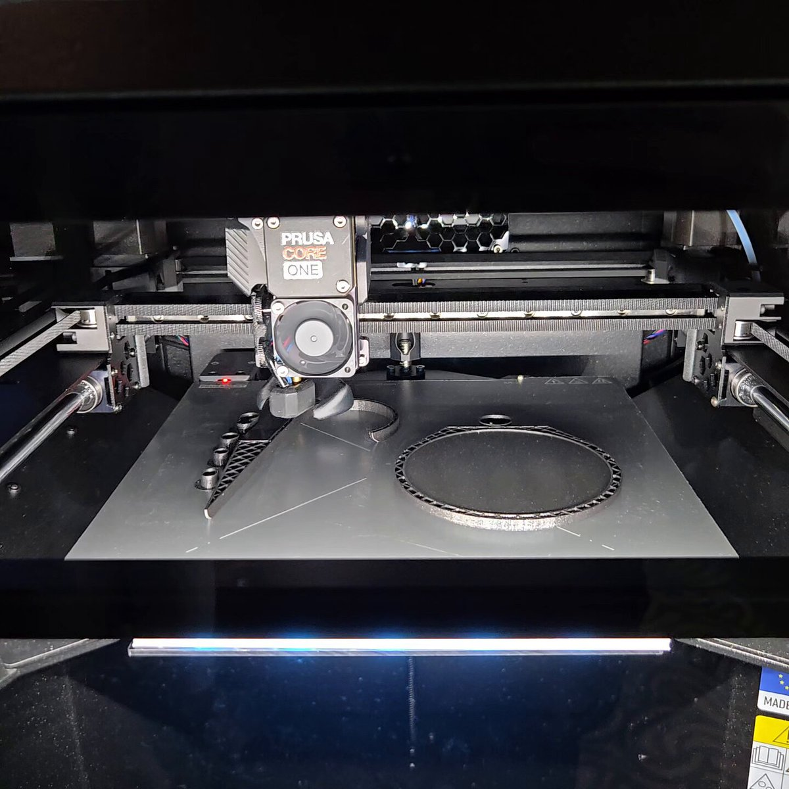
いいえ、これこそ古き良き青春ラノベアニメです。シチュエーション特化型のラノベに押されていただけで。
西春っ！Girls
@nishi_haru02
『クラスで2番目に可愛い女の子と友だちになった』という脂マシマシタイトルから主人公を中心とした家族ドラマをネットリ見せられるアニメだとは思わなくて「店長、俺はこの味付けあり派だけどラノベ味付け求めてる客は怒らない？」にはなる。 x.com/nishi_haru02/s…
Switch 2 / Xbox Series X|S / Windows版「FINAL FANTASY VII REBIRTH」，本日発売
https://
4gamer.net/s/G098142.2606
03027
…
ダウンロード版とDigital Deluxe Editionが20％オフになる早期購入セールが6月10日まで実施中だ
輿水畏子さんがリポスト
ノア新衣装どうー？
#まのさば
ギズモード・ジャパン（公式）さんがリポスト
一狩り
ギズモード・ジャパン（公式）
@gizmodojapan
サムライ・ソード・コンピュータ
アークシステムワークスの未発表新作や，「GUILTY GEAR ‐STRIVE‐」「デモンズナイトフィーバー」の開発者パネルがAnime Expoで7月4日開催予定
https://
4gamer.net/s/G052700.2606
03028
…
GGSTプロデューサーの宮内 健氏や，元・日本一ソフトウェア社長の新川宗平氏，「クライマキナ」を手掛けた平八重 諭氏が出演へ
AVITAMINOSEさんがリポスト
静岡県伊豆町稲取で1時間に66mm、千葉県大多喜町で同60.5mmなど非常に激しい雨を観測。
東京都心でも1時間に40mmを観測し、正午までの総雨量173.5mmとなっている。
特に1時間に30mmオーバーが3時間以上も続いたのは、1958年の狩野川台風を彷彿とさせられる。
サブ垢のフォロワー10人くらい減ってるけど凍結が発生したのか単に無益アカウントとしてリムられたのか気になる
ほのぼの。
実は特殊な日本の“コーン×マヨ”文化
「これだけは理解できない」 なぜ海外は日本の“コーンマヨ文化”に困惑するのか？ 「食べたらハマった」という人も
（記事URLはリプから）
「これだけは理解できない」 なぜ海外は日本の“コーンマヨ文化”に困惑するのか？ 「食べたらハマった」という人も | ライフスタイル ねとらぼ
Torishima / INTPさんがリポスト
時間をかけて導入するに値するか判断するには、できることや作業経過がどんな感じかビジュアルにわからないといけませんしね。人によっては「これならまだいいや」と思えることが役立つこともありますし、スゲースゲー言っててもしょうがないんですよね。
駅でpovoの無料データチャージ出来たので初めて使ってるけど、無料なのにahamoより繋がるし早い
【噂まとめ】iPhone 18が「廉価モデル」に？ Proとの差が大きくなりそう（6/3 更新）
【噂まとめ】iPhone 18が「廉価モデル」に？ Proとの差が大きくなりそう（5/7 更新） | ギズモード・ジャパン
スマホもPCもいけるゲームコントローラー「Backbone Pro」使ってみた
スマホもPCもいけるゲームコントローラー「Backbone Pro」使ってみた | ギズモード・ジャパン
Opus止まりまくりで辛い
急いで続行したいときはSonnetに切り替えると動くけど
V
@voluntas
Claude Code さんひたすら止まるので、皆これ本当に使ってるの？って気持ちになるな。
IHIまた不正がバレる（2年ぶり過去20年で5度目）、今度はJAXA向けロケット製造装置の虚偽報告と不正請求
JAXA「あの工作機械、本当にメンテナンスしてるんですよね？」IHI「してるしてる。5000万円くれよ」 pic.twitter.com/J6Vc4OmiSr— ○イジー (@daisycutter7) June 3, 2026 2026/06/02 IHI当社連結子会社 株式会社ＩＨＩエアロスペースに対する競争参加資格停止処分について
kabumatome.doorblog.jp
剣と魔法を駆使して戦う一人称視点ダークファンタジーRPG「Fatekeeper」，Steamで早期アクセスを開始。リリース記念の20％オフセールも実施中
https://
4gamer.net/s/G093427.2606
03026
…
敵ごとに異なる特徴や攻撃パターンを見極めながら，状況に応じた戦術を組み立てることが重要
CORSAIRのメモリ「SHUGO」アピール用のカスタムPC。ヒートシンクにも光が透過するギミックがあって、やたらかっこいい
@CORSAIR_JP
#COMPUTEX2026
サムライ・ソード・コンピュータ
はま寿司で迷惑行為疑い、43歳男逮捕 #ldnews
https://
news.livedoor.com/article/detail
/31444856/
… 厳罰で頼む。不起訴とかやめてくれよ？！
はま寿司で迷惑行為疑い、43歳男逮捕
台風で食材ないので、AIに冷蔵庫のあり合わせで作ったレシピ美味い！！
冷凍ベリーのオリーブオイルとレモン水と塩と胡椒がけ。意外においしいぞ！！
これが「iPhone Ultra」!? ダミーモデルが動画でリーク
これが「iPhone Ultra」!? ダミーモデルが動画でリーク | ギズモード・ジャパン
サイバーセキュリティクラウドで働くみんなのデスク環境 上場セキュリティ企業を支える机をチェック
サイバーセキュリティクラウドで働くみんなのデスク環境 上場セキュリティ企業を支える机をチェック
Torishima / INTPさんがリポスト
結果発表！Anthropic か OpenAI の株が公開されたらどちらを買いますか？
573 票集まり、OpenAI 52%、Anthropic 48% となりました！
海外と逆転したのは日本の Codex 人気が要因？よかったら理由も教えてください！
投票いただいた方々、ありがとうございました！
ぬこぬこ / NUKO
@nukonuko
ゆる募：Anthropic か OpenAI の株が買えるようになったとして、手元に潤沢な資金があって、どちらかの株しか買えないとしたらどちらを買いますか？
アニメ『ガールズバンドクライ』公式さんがリポスト
#トゲラジ 公開収録イベント
一次先行抽選（スペシャル会員限定）の申込がスタートしています！
当日、会場でお会いしましょう！！
トゲナシトゲアリのトゲラジ～川崎から世界へ～
@togeradi897
#トゲラジ 公開収録の開催決定
2026/7/11(土)
西荻地域区民センター
14:0018:00
各部¥5,500
後日、各部のSPゲストを発表！
一次先行抽選はスペシャル会員対象
明日6/3(水)正午から！
https://
togeradi-interfm.bitfan.id
※詳細/抽選申込は6/3(水)12時にコチラに公開※
#ガルクラ
#interfm
食品消費税「27年春に1％」環境整う レジ改修に半年、経産省が報告
食品消費税「27年春に1%」環境整う レジ改修に半年、経産省が報告
日経平均一時初の6万8000円台 キオクシアがトヨタ超え、AIラリー加速
日経平均一時初の6万8000円台 キオクシアがトヨタ超え、AIラリー加速
雨が収まって来たのでこれから出社
深津 貴之 / THE GUILD, noteさんがリポスト
東急×StoryHubの実証実験開始に寄せてnoteを書きました。
会社を創業するに至った「地域情報流通の課題解決」というテーマに、本連携でまた取り組めることに、とてもワクワクしています！
AI × まちづくり ×メディアという、ありそうであまりなかったテーマに挑んでいきます
まちに埋もれた物語をすくいあげ、届ける――東急×StoryHubで挑むこれからのAI×メディアの形｜渡邉 真洋 / StoryHub COO
魔王の妹がモンスターたちを支配して，自分だけのパーティを編成する「魔王パーティ」，Steamストアページを公開
https://
4gamer.net/s/G101207.2606
03023
…
2025年に発売された前作「デバッグヒーロー」クリア後の世界での物語が展開される
【合計最大クォーツ4500個！】
ペルソナ５ ザ・ロイヤル コラボ ログインボーナス開催中！
毎日ログインでクォーツ300個が手に入る！
合計で最大4500個のクォーツを獲得しよう！
▼開催期間
6月19日10:59まで
#ヘブバンペルソナ５ザロイヤルコラボ #ヘブバン
マクドナルド広報、ガチでやばいネットミームをネタにしてしまい、炎上→とんでもないことになる #雑談・その他の話
マクドナルド広報、ガチでやばいネットミームをネタにしてしまい、炎上→とんでもないことになる - オレ的ゲーム速報@刃の記事ページ
jin115.com
「G-MODEアーカイブス+ 藤堂龍之介探偵日記 Vol.8『菫青の鳥籠〜人形屋敷連続殺人事件〜』」，6月4日配信。配信記念セールも実施
https://
4gamer.net/s/G101189.2606
02051
…
フィーチャーフォン向けに配信された推理ADVがG-MODEアーカイブス+で復刻。人形屋敷を舞台にした連続殺人事件に挑む
ギズモード・ジャパン（公式）さんがリポスト
takashicompanyさんが公開していたフットプリントに、cherry MXのスイッチソケットと直付けの併用できるものがありました。USB周りは、干渉する関係で、スイッチソケットを南向きにしました。でも、このフットプリントを使って、スイッチソケットを全部、南向きにしてしまうのも、ありかな。
純粋・天然・怪力の美少女破壊神レクイエムが「NTE: Neverness to Everness」に登場。ヒナタ島やポルシェコラボなど，Ver.1.1の新コンテンツを先行体験【PR】
https://
4gamer.net/s/G081722.2606
01001
…
レクイエムのシティスキルは，カフェと大強盗で2種類。ファンス産出量2倍イベント「ファンスラッシュ」も開催に
【厳しい定義】岩手で生産されたものしか「盛岡冷麺」は名乗れない
岩手県と他県で“ローソンの冷麺”を比較→“まさかの違い”に「さすがwwww」「始めて知った！」
（記事URLはリプから）
岩手県と他県で“ローソンの冷麺”を比較→“まさかの違い”に「さすがwwww」「始めて知った！」（1/2） | グルメ ねとらぼ
Microsoft「全方位」提携でAIの出遅れ挽回へ OpenAIとは距離
Microsoft「全方位」提携でAIの出遅れ挽回へ OpenAIとは距離
「週刊VTuberファイル」File.123：竜瞳ミリュー【ユニバースプロダクション】
https://
4gamer.net/s/G101138.2605
30001
…
「週刊VTuberファイル」では，さまざまなシーンで活躍するVTuberを毎回1人フィーチャーし，その魅力を紹介していきます
［プレイレポ］「eFootball」初の買い切り型タイトルがSwitch2に登場。「eFootball Kick-Off!」は遊び込めるシングルプレイモードを搭載
https://
4gamer.net/s/G098187.2605
26025
…
お手頃な3850円。課金要素なし。ワールドツアーモードの初期メンバーはウイイレ世代にも懐かしいミナンダ，ホイレンスといった顔ぶれ
ポン☆潤々さんがリポスト
商品情報
6月12日(金)発売
#WSブラウ
ブースターパック『Fate/strange Fake』
に収録される
“真ライダー”
のカードを公開
明日の公開もお楽しみに
商品詳細はコチラ
https://
ws-blau.com/item/fsf_01b/
#strangefake #ストレンジフェイク
ヘブンバーンズレッド公式さんがリポスト
舞台『ヘブンバーンズレッド』
Blu-ray発売まであと6日
#朝倉可憐 役の #太田夢莉 さんの
お写真でカウントダウン
Blu-rayご予約受付中▼
https://
officeendless.com/sp/hbr_stage/b
lu-ray/
…
#舞台ヘブバン #ヘブバン
☆┈┈┈┈┈┈┈┈☆
今日は 学マ水曜日！
☆┈┈┈┈┈┈┈┈☆
今週は
『学マ水曜日ガシャチケット × 1』
を配布中
ログインで
SSR1.5倍【ガラクタロード】広ガシャ
を1回引けますよ♪
配布期間
6/10(水)4:59まで (予定)
#学マス
『中国大陸の帝国陸軍戦車・装甲車・装甲列車』の献本をいただきました。
中国の戦争博物館へ行くと鹵獲された日本の装甲車両が国共内戦の英雄として飾られているのを目にしますが、日本による現役時代の貴重な写真・イラストで解説。太平洋だと基本朽ちてて装甲列車もないので参考になります！
よしぞうmaro'
@yosizo
本日、イカロス出版で拙新刊「中国大陸の帝国陸軍戦車・装甲車・装甲列車」を受領。その足で書泉グランデに立ち寄り、購入特典のサイン入りポストカードを納品。6月19日(金)のトーク&サイン会申し込みはこちらから↓。皆様、どうぞ宜しくお願いします
https://
t.livepocket.jp/e/f9rbh
とりしま (Sub I/O)さんがリポスト
郷に入っては郷に従え
これに全部が込められてるよねぇ
けんすう
@kensuu
日本に住んでいる外国の人と何人か話した時に言ってたのが
・人種差別が少ない。というか、人種という概念がかなり希薄。気にしていないというかよく知らないに近い
・公共マナーとかに対しては異常にうるさい。ここを守らないと途端に厳しいし差別される。 x.com/tsukikiyora/st…
マジに考えると、
「普段は船として使える（航行可能）」
「平坦で地盤がしっかりしているところならキャタピラで通り抜けてしまえる」
「火力は化け物」
だったら有用では？
装甲列車のオバケバージョンで。
Microsoft、次世代量子チップ「Majorana 2」披露 実用化目標を2029年に前倒し
Microsoft、次世代量子チップ「Majorana 2」披露 実用化目標を2029年に前倒し
とりしま (Sub I/O)さんがリポスト
やっぱAIアニメは情報減らした方がいいな
ぬるぬるぴかぴか動いても頭が処理しないし
逆に実写は既視感が仕事するから人混みとかも見れる
852話(hakoniwa)
@8co28
なんかこのAIアニメーションめっちゃいい
台詞では『陸上戦艦』でしたね失礼。
しかし、驚いたな・・・。マジか。良いぞもっとやってくれ。
お姉ちゃんお守り隊だね
ビジュ良すぎバンド
東京新聞が書いてるってことはなんか裏がありそうな気配も。
ukai_23ku
@ukai_23ku
JR東日本の運転士が有給休暇取得承認後に自宅から初電で出勤不能なシフトを組まれ、管理職4人に相談するも「間に合うように来てください」「寝室は用意します」と。
JR東日本の回答「宿泊場所を用意するなど配慮し、勤務変更は対応していない」「前泊は社として指示していない」
2026/06/03 東京
『地上戦艦』、だと・・・。
#なんか見た
うふふ、かわいい
なるせひろのりさんがリポスト
嘘でしょ！？まさかのアクセル全開で柱に激突！？
自転車の人、あわや車と柱に挟まれるところだったな。。。
ゼロから作るDeep Learning ❻ ―LLM編 本日発売
ゼロから作るDeep Learning ❻
とりしま (Sub I/O)さんがリポスト
よく分析されているというか、ほとんど違和感は無いんだけど、「公共マナーを守らないと差別される」ってのはなかなかわからない感覚だ。それは単純に「嫌悪」されてるだけで差別じゃないんだよな。日本人が同じことをしても嫌悪されるよ
けんすう
@kensuu
日本に住んでいる外国の人と何人か話した時に言ってたのが
・人種差別が少ない。というか、人種という概念がかなり希薄。気にしていないというかよく知らないに近い
・公共マナーとかに対しては異常にうるさい。ここを守らないと途端に厳しいし差別される。 x.com/tsukikiyora/st…
米国からの送金をSBI新生銀行で受け取りましたが、住信SBIでは都度受け取り確認の手続きが発生していたのが、すっと受け取りができてました。通知すら来ずに。
リメイク『R-Type Dimensions III』不評受け今後の改善計画発表―コミュニティメンバー＆追加テスター参加のQA実施、欧米向けパケ版は製造開始延期へ
https://
gamespark.jp/article/2026/0
6/03/167333.html?utm_source=twitter&utm_medium=social&utm_content=tweet
…
Steamのユーザーレビューでは「不評」のステータスになっています。
AIがアイテムやイベントを動的に生成。ファンタジー世界を自由に冒険できるローグライクRPG「Instantale」，Epic Games Storeで発売
https://
4gamer.net/s/G091095.2606
03024
…
決められた物語は存在せず，あらゆる選択はプレイヤー自身の自由な入力に委ねられている
エレベーター「二重ブレーキ」設置4割 死亡事故で義務化も普及せず
エレベーター「二重ブレーキ」設置4割 死亡事故で義務化も普及せず
ポン☆潤々さんがリポスト
◤ヴァイスシュヴァルツ 今日のカード◢
6月26日(金)発売
ブースターパック グランブルーファンタジー
ノーマルカードを公開！
商品情報はこちら！
https://
ws-tcg.com/products/gbf_b
p/
…
#グラブル #WS
ポン☆潤々さんがリポスト
◤#ヴァイスシュヴァルツ今日のカード◢
6月26日(金)発売
ブースターパック グランブルーファンタジー
パラレルカードを公開！
商品情報はこちら！
https://
ws-tcg.com/products/gbf_b
p/
…
#グラブル #WS
「お客様の中にピアニストはおられませんか？」案件！
ライブドアニュース
@livedoornews
【勇気】コンサート中にピアニストが体調不良、観客の大学生が代演で窮地救う 豪
https://
news.livedoor.com/article/detail
/31436435/
…
「ラ・ラ・ランド」関連の公演でピアニストが演奏できない状態となり、指揮者が観客の中に楽譜を初見で演奏できる人はいないかと尋ねた。すると、友人から推薦された21歳が代演したという。
日本経済新聞 電子版（日経電子版）さんがリポスト
迫るサッカーＷ杯、日本代表の白ユニホーム販売25倍 全国でPV準備
迫るサッカーワールドカップ、日本代表の白ユニフォーム販売25倍
公立中学校の事務員、コテコテの詐欺に引っかかり学校口座から1000万円送金→保険効かない場合は一般会計から補填の可能性→ネット民ブチギレへ #酷い話・事件
公立中学校の事務員、コテコテの詐欺に引っかかり学校口座から1000万円送金→保険効かない場合は一般会計から補填の可能性→ネット民ブチギレへ - オレ的ゲーム速報@刃の記事ページ
jin115.com
とりしま (Sub I/O)さんがリポスト
日本が同調圧力が強いというのは嘘で、同調圧力がかかる部分が国によって違うという話。
日本のデブはいじっても大丈夫だが、アメリカではデブいじりは禁じられている。
日本では上司が会議で部下を詰めたりするが、中国では人前で相手に恥をかかせるのは禁じられている。
けんすう
@kensuu
日本に住んでいる外国の人と何人か話した時に言ってたのが
・人種差別が少ない。というか、人種という概念がかなり希薄。気にしていないというかよく知らないに近い
・公共マナーとかに対しては異常にうるさい。ここを守らないと途端に厳しいし差別される。 x.com/tsukikiyora/st…
川崎駅西口の季節料理よしもと。しっかりと全部おいしい。オリジナル料理のちりむし豆腐は卵も魚も入ってて鍋料理の満足感。川崎は西口も要チェックだね。
すごい！
「神業すぎて放心状態」 大野智、ライブ中の写真にファン騒然 「長年の努力の賜物」「ブランクあるとは思えない」
@arashi5official
▼記事を読む▼
https://
nlab.itmedia.co.jp/cont/articles/
3865391/
…
ポン☆潤々さんがリポスト
梅雨のジメジメ…
和の香りでリフレッシュ
大人の和バーガーが
あなたのモヤモヤを吹き飛ばす
6月10日の発売を記念し、
店頭で使えるカード1,000円分が当たる
【応募期間】
6月9日まで
【応募方法】
①
@Freshness_1992
をフォロー
② この投稿をリポスト
③ 当選者へ6月12日までにDM通知
強強お姉ちゃんだ！！！ラブだね〜〜〜〜！！
パナソニックHD、AIインフラに懸け 総合電機の「負け組」脱却へ
パナソニックHD、AIインフラに懸け 総合電機の「負け組」脱却へ
ハムスターさん 日清カップヌードルと遂にコラボかわいいｗｗｗｗｗｗｗｗ
ハムスターさん 日清カップヌードルと遂にコラボかわいいｗｗｗｗｗｗｗｗ : ハムスター速報
hamusoku.com
響け！ユーフォニアムのさふぁいあちゃんと同じだ…。あっちは少しすると『みどり』に改名しちゃいましたとなりそうな気もしてね。
p
@p_ka2295079
キラキラネームをつけられた方からです
AI時代の「知識創造企業」 ユニクロはパリとボストンで違う
AI時代の「知識創造企業」 ユニクロはパリとボストンで違う
Torishima / INTPさんがリポスト
大事なのは、「新しい技術をなんでもかんでも紹介してオワリ」ということをしないってことなんですよね～。どう便利に使えて、まだできないことは何で、それでどういうものが作れたのかまでワンストップで見せられないなら紹介すべきではないと思ってます。
デザイン書の老舗・MdNが消滅へ インプレスに吸収合併
デザイン書の老舗・MdNが消滅へ インプレスに吸収合併
貝さんさんさんがリポスト
3Dアニメーターの求人応募開始しました！
作画と3Dのハイブリッドアニメ作品に携わりたい方、是非お気軽にご応募ください
Marco inc.
@MarcoCG_inc
【求人募集のお知らせ】
2027年新卒及び中途の方、求人募集を開始致します。
・【新卒、中途採用】契約社員：3Dアニメーター
経験者歓迎！中途の方は随時受付中で、希望人数に達し次第終了致します。
詳しくは下記へ
https://
marco-cg.com/recruit/
＞ω＜さんがリポスト
Microsoft MAI Thnkingの技術詳細の解説。
面白いけどクソ長いｗ
スライディングアテンションとフルアテンションで、フルでは位置エンコーディングしてないとか、MoE層とDense層を交互に配置とか、結構おもしろい構成。
elie
@eliebakouch
Microsoft MAI技術レポートは金脈だ、この規模のモデルとしては最も透明性の高いもののひとつだ。 x.com/mustafasuleyma…
「The Eternal Life of Goldman」，PS5向け体験版を配信開始。幻想的かつダークな世界を手描きアニメーションで描く2DアクションADV
https://
4gamer.net/s/G082537.2606
03025
…
神秘的な存在「神」の暗殺という奇妙な任務を背負った主人公となり，群島を舞台にした探索型アクションを約90分体験できる
ちりんちりーん
AVITAMINOSEさんがリポスト
現在、下記のアンダーパスが浸水被害により通行止めとなっています。
・木場親水公園の舟木橋アンダーパス（江東区木場2-7）
・木場親水公園の要橋アンダーパス（木場3-15-6）
・古石場川親水公園の古石場橋アンダーパス（江東区牡丹2-10-5）
Microsoft、AIエージェント用のカスタマイズ可能な分離環境「Microsoft Execution Containers」発表 OpenClawも動作
Microsoft、AIエージェント用のカスタマイズ可能な分離環境「Microsoft Execution Containers」発表 OpenClawも動作
Microsoft、自社開発した7つのAIモデル発表 画像編集や音声認識も
Microsoft、自社開発した7つのAIモデル発表 画像編集や音声認識も
千代田区陥落。1時間の時差は何なんだ。
鈴木農相「鶏肉の価格高騰？消費者が○○してるからでしょ」→国民、ガチギレ #炎上
鈴木農相「鶏肉の価格高騰？消費者が○○してるからでしょ」→国民、ガチギレ - オレ的ゲーム速報@刃の記事ページ
jin115.com
オタクくんじゃない「トラックくん」として異世界転生エルフを支援！『Truck-kun is Supporting Me from Another World?!』配信日決定＆デモ版まもなく公開
https://
gamespark.jp/article/2026/0
6/03/167332.html?utm_source=twitter&utm_medium=social&utm_content=tweet
…
スマホが開くならスタンドも開け。折りたたみ専用MagSafeグリップ #BuyPR
スマホが開くならスタンドも開け。折りたたみ専用MagSafeグリップ | ギズモード・ジャパン
大井川鉄道、井川線を観光鉄道に 1乗車3500円に値上げ
https://
nikkei.com/article/DGXZQO
CC0171R0R00C26A6000000/?n_cid=SNSTW005&n_tw=1780403695
…
井川線は日本で唯一、歯車で急勾配を上る「アプト式」で走る区間があることで知られます。鳥塚亮社長は「地域の足としての役割は終わった」とし、収益の改善に乗り出します。
大井川鉄道、井川線を観光鉄道に 1乗車3500円に大幅値上げ
Nape Pro、昨日に続いて最新ファームがリリースされています。忙しなくて恐縮ですが、無線時のホイール操作が安定するようになりましたので、ぜひアップデートお願いします。
輿水畏子さんがリポスト
4人集合
ペロブスカイト、日本は｢耐久素材｣で中国に勝つ 印刷機の知見生かす
ペロブスカイト太陽電池、日本は｢耐久素材｣で中国に勝つ 印刷機の知見生かす
輿水畏子さんがリポスト
フジ・メディアＨＤ株価が反落 村上氏側の議決権行使禁止の仮処分
フジ・メディアHD株価が反落 村上氏側の議決権行使禁止の仮処分
と思ったら更新が来ていた:
> openai-codex-cli-bin 0.132.0 0.136.0 wheel
ほかにscikit-learn 1.9.0も来ている
さてと試験会場向かうかな
佐々木俊尚＠新著「フラット登山 日本を歩く旅60」7月8日刊行！さんがリポスト
日本に住んでいる外国の人と何人か話した時に言ってたのが
・人種差別が少ない。というか、人種という概念がかなり希薄。気にしていないというかよく知らないに近い
・公共マナーとかに対しては異常にうるさい。ここを守らないと途端に厳しいし差別される。
月清
@tsukikiyora
欧米のゲイ連中が同じようなことを言ってる。
「日本人は公共マナーを尊重して少しの日本語を話すだけで非常に親切に接してくれる。根拠に基づいた主張なら日本人は傾聴する」「日本でゲイは抑圧されていると思っていたら社会的に自立していた」と言っていた。 x.com/hpzimmerfrei/s…
マジか・・・。空中に座席がロケットで飛び出す射出座席、体に結構負担がかかると聞いたけど、この人タフだな・・・。
「雷に2度打たれるようなもの」1カ月で2回撃墜される イランから生還の米操縦士
https://
sankei.com/article/202606
03-5PTQ2LZH6FPBTOKVBL4SLKAZIE/
…
@Sankei_news
より
「雷に2度打たれるようなもの」1カ月で2回撃墜される イランから生還の米操縦士
気象庁「線状降水帯情報」不具合で発表できず 運用開始わずか5日
気象庁「線状降水帯情報」不具合で発表できず 運用開始わずか5日
AI時代の情報発信するなら、まずnoteをちゃんと試してみるとええのでは！？
note pro公式 | 法人オウンドメディアをかんたん、すぐに立ち上げ
@notepro_staff
新しい記事を公開しました！
「AI×Webマーケティングの最前線」をテーマにしたWeb Maketing Summit 2026にnoteプロデューサーの徳力が登壇します。
https://
biz.note.com/n/nc5bcdffcd6e3
エンドスさんがリポスト
円下落、一時160円台 中東情勢先行き不透明感
円下落、一時160円台 中東情勢先行き不透明感
電子部品株がITバブル並み急騰 村田製作所､AI向け8割増収で勝ち組に
電子部品株がITバブル並み急騰 村田製作所､AI向け8割増収で勝ち組に
クレカサイズのPCできた！Wi-Fi・NFC・eインク搭載、厚さ1mmでも動く
クレカサイズのPCできた！Wi-Fi・NFC・eインク搭載、厚さ1mmでも動く | ギズモード・ジャパン
この腕時計、秒針がない。分針が惑星みたいに軌道を描くだけの潔さがいい #BuyPR
この腕時計、秒針がない。分針が惑星みたいに軌道を描くだけの潔さがいい | ギズモード・ジャパン
「カード型のAIデバイス」をMicrosoftが発表。これで十分？
「カード型のAIデバイス」をMicrosoftが発表 | ギズモード・ジャパン
韓国SK、AI時代のメモリー王者に サムスンしのぐ利益率と人気
韓国SK、AI時代のメモリー王者に サムスンしのぐ利益率と人気
インテル、鴻海とAI用サーバー群供給 「最も優れたCPU技術開発」
インテル、鴻海とAI用サーバー群供給 「最も優れたCPU技術開発」
ポン☆潤々さんがリポスト
本日22:30からはアイマスMOR!今回からパーソナリティはSideM花園百々人役宮﨑雅也さんと765天海春香役中村繪里子さんです!今回は皆さんからのリクエスト「他ブランドのPに紹介したい曲」!会員限定おまけ放送まで是非!タイムシフトもお忘れなく!
#imas_MOR #アイマスMOR
THE IDOLM@STER MUSIC ON THE RADIO #399
米、イラン軍事施設を攻撃 ホルムズ海峡近くの島「自衛目的」
米、イラン軍事施設を攻撃 ホルムズ海峡近くの島「自衛目的」
東京電力ＨＤ株価が続伸 資本提携交渉「外資も排除せず」次期会長
東京電力HD株価が続伸 資本提携交渉「外資も排除せず」次期会長
輿水畏子さんがリポスト
ﾗｸｶﾞｷ
【物議】日本政府、ナフサショックについて言論統制スレスレの圧力をかけていたと報道 かなりヤバい内容が業界から漏れ始める #炎上
【物議】日本政府、ナフサショックについて言論統制スレスレの圧力をかけていたと報道 かなりヤバい内容が業界から漏れ始める - オレ的ゲーム速報@刃の記事ページ
jin115.com
【3,300円→0円】オープンワールド型の犯罪ACT『マフィア III』がAmazonプライム会員向けに無料配布！60年代舞台、ベトナム帰還兵が主人公の渋い作品
https://
gamespark.jp/article/2026/0
6/03/167331.html?utm_source=twitter&utm_medium=social&utm_content=tweet
…
そういやこのあいだ、１ナンバーになってるアルファードを見たなぁ。工事屋さんが使ってるみたいだったから、ある意味実用的？
ゐんころもち
@hiloyuqi_500c
今日の帰り道で見かけたアテンザ。
３ナンバーではなく、１ナンバー…
確かに寸法的には4ナンバーの枠は超えますが、最大積載量の表記が無いのが何とも
封印はされていたので天ぷらナンバーでは無さそうですが…
Bangさんがリポスト
◤￣￣￣￣￣￣￣￣
#ACE8
2026.10.2 発売決定記念
プレゼントキャンペーン
＿＿＿＿＿＿＿＿◢
抽選で3名様スーベニアジャケットをプレゼント
①
@PROJECT_ACES
をフォロー
②この投稿をリポスト
たくさんのご応募お待ちしております
【応募締切】
6月16日（火）23:59まで
徳丸 浩さんがリポスト
徳丸さんとかろっくさんをお呼びして、セキュリティとIDのお話をします！自分は本に書いてることも書いてないことも話します
“ID沼入口” - 基本とセキュリティから始める、考え続けるためのID管理技術勉強会
https://
openid.connpass.com/event/396041/ #OpenID
“ID沼入口” - 基本とセキュリティから始める、考え続けるためのID管理技術勉強会 (2026/07/02 15:00〜)
なるせひろのりさんがリポスト
◤￣￣￣￣￣￣￣￣
#ACE8 早期購入＆プレオーダー特典
＿＿＿＿＿＿＿＿◢
✦「ACE COMBAT ZERO: THE BELKAN WAR(移植版)」
✦プレイアブル機体：F-14A
早期購入＆デジタル版のご予約で
現行機版であの #ACEZERO がお楽しみいただけます！
是非予約してゲットしてください！
Torishima / INTPさんがリポスト
音madとしてみると、既存の作品の文脈を切り刻んで再構成することがコアにあるので、フルスクラッチなものを得意とする動画生成AIとは相性が悪めだった印象
AVITAMINOSEさんがリポスト
東京 千代田区 レベル3神田川流域に高齢者等避難の情報
https://
news.web.nhk/newsweb/na/na-
k10015139481000
… #nhk_news
東京 千代田区 レベル3神田川流域に高齢者等避難の情報 | NHKニュース
AVITAMINOSEさんがリポスト
東京 品川区 全域に避難指示 21万世帯 38万人余
https://
news.web.nhk/newsweb/na/na-
k10015139431000
… #nhk_news
東京 品川区 全域に避難指示 21万世帯 38万人余 | NHKニュース
GIZMARTでクラファン中です↓
https://
costory.jp/cf-published-s
ku-groups/1564464666
…
KOPEK JAPAN
@KOPEK_JP
台湾のCOMPUTEXでの展示模様をお届けします！
こちらはT1 HEの試作サンプル。
Keychron初のトラックボールマウスなだけでなく、新型のMagOptスイッチが搭載されています。
ポン☆潤々さんがリポスト
後半が遂にスタート
昨日も多くのご来店誠に感謝申し上げます
アイドルマスター SideM
「彩」「Legenders」ドーナツ販売中！
イクミママのどうぶつドーナツ！にて、
「彩」（猫柳キリオ・華村翔真・清澄九郎）
「Legenders」（葛之葉雨彦・北村想楽・古論クリス）
とりしま (Sub I/O)さんがリポスト
関東からですが、雨は激しいけれど風はあまり強くない感じ。 #musicshower
ENEOSタンカー帰港「安堵できない」 中東情勢、5月収束想定崩れる
ENEOSタンカー帰港「安堵できない」 中東情勢、5月収束想定崩れる
日本人「『GTA6』よりもポケモン！スプラトゥーン！ゴエモン！」→外国人「・・・え？日本はパラレルワールドか？」 #ゲーム
日本人「『GTA6』よりもポケモン！スプラトゥーン！ゴエモン！」→外国人「・・・え？日本はパラレルワールドか？」 - オレ的ゲーム速報@刃の記事ページ
jin115.com
【日本語対応】ターン制RPG『アーティス インパクト』スイッチ版9月17日発売！手描きのドット絵と滑らかなアニメーションが圧巻
https://
gamespark.jp/article/2026/0
6/03/167330.html?utm_source=twitter&utm_medium=social&utm_content=tweet
…
Switch版「アーティス インパクト」，9月17日に発売決定。PC（Steam）版に未実装の日本語テキストでゲームを楽しめる
https://
4gamer.net/s/G094596.2606
02038
…
価格はパッケージ版が4950円（税込），ダウンロード版が2750円（税込）だ
日経平均株価、一時初の6万8000円台 キオクシアなど押し上げ
日経平均株価、一時初の6万8000円台 キオクシアなど押し上げ
【多文化共生】ディズニーランドに貧民が集結しスラム街化 外国人なら通路を占拠してカップラーメン等の食事オッケーになる
【多文化共生】ディズニーランドに貧民が集結しスラム街化 外国人なら通路を占拠してカップラーメン等の食事オッケーになる : ハムスター速報
AVITAMINOSEさんがリポスト
【緊急のご連絡】本日、書泉グランデは「臨時休業」をさせていただきます。台風の影響で「雨漏り」「吹き込みなどによる水のしみ出し」などが発生しております。お客さまには大変ご迷惑をおかけしますが、本日は休業し、明日より通常営業できるように復旧をさせていただきます。#台風
あー、リッスンのネタがこっちにもwwww 親戚よりも来てるとなw。#アップ738
深津 貴之 / THE GUILD, noteさんがリポスト
詳細
決死の覚悟でのぞんだnoteのドメイン移行。検索流入急落からの復活劇｜note株式会社
ヒロキさんがドア外したとかそういう話があったからリスナーさんが反応してくれた？ #アップ738
トランプ米大統領、AI安全保障に関する大統領令に署名 最先端モデルを公開30日前に政府が検査可能に
トランプ米大統領、AI安全保障に関する大統領令に署名 最先端モデルを公開30日前に政府が検査可能に
ナムコの名作「ギャラクシアン」を、古のプログラム言語「COBOL」で勝手移植してしまう猛者が登場!!
心の目で見れば、まず間違いなくあのギャラクシアンにしか見えないので、マジで凄いチャレンジだと僕は思うンだッッ!!
https://
github.com/DukeDeSouth/co
bol-galaxian
…
AVITAMINOSEさんがリポスト
【台風6号 現地中継】千葉では夕方にかけ線状降水帯発生の可能性 南房総市内では暴風･波浪警報 避難所7つが開設
【台風6号 現地中継】千葉では夕方にかけ線状降水帯発生の可能性 南房総市内では暴風･波浪警報 避難所7つが開設 | TBS NEWS DIG
なるせひろのりさんがリポスト
川崎のアゼリア地下駐車場の出口アトラクションみたくなってた
とりしま (Sub I/O)さんがリポスト
ロリヤチヨ
#超かぐや姫
『2XKO』新レジェンド「セナ」6月10日に実装！当日のメンテ終了後から参戦
https://
gamespark.jp/article/2026/0
6/03/167329.html?utm_source=twitter&utm_medium=social&utm_content=tweet
…
AVITAMINOSEさんがリポスト
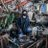
市ヶ谷駅のホーム、意外と浸水しないんですね。
めっちゃたぷたぷに見えるけども
周囲は真っ赤なのに、千代田区だけレベル3大雨警報が出ない謎現象キター
ちなみに「神田川レベル４氾濫危険警報」の対象範囲。なんかチグハグな感じがするよなぁ。
https://
jma.go.jp/bosai/map.html
#11/35.672/139.721/&elem=rain&contents=warning
…
https://
jma.go.jp/bosai/warning/
#area_type=class20s&area_code=1310100&lang=ja&timeline_efilter=all&timeline_lfilter=all
…
東京江東区にレベル３大雨警報発令。防災無線で何か言ってたのはこれだったか(雨音が強くて全然聞こえなかった)
https://
jma.go.jp/bosai/warning/
#area_type=class20s&area_code=1310800&lang=ja&timeline_efilter=all&timeline_lfilter=all
…
NVIDIA「RTX Spark」搭載Surface Laptopが今秋登場。M5 Max搭載MacBook Proの対抗馬となるか
NVIDIA「RTX Spark」搭載Surface Laptopが今秋登場。M5 Max搭載MacBook Proの対抗馬となるか | ギズモード・ジャパン
【悲報】厚労省「6月は○○月間です！」→移民問題にイラつくネット民の神経を逆撫でして炎上 #政治
【悲報】厚労省「6月は○○月間です！」→移民問題にイラつくネット民の神経を逆撫でして炎上 - オレ的ゲーム速報@刃の記事ページ
jin115.com
魔法を極め、遺物、呪文、そして選択を通じ道を切り開く1人称視点ARPG『Fatekeeper』早期アクセス版リリース。強すぎグラフィックで景色もゴアも大迫力
https://
gamespark.jp/article/2026/0
6/03/167328.html?utm_source=twitter&utm_medium=social&utm_content=tweet
…
AVITAMINOSEさんがリポスト
【レベル４大雨危険警報】東京都・品川区に発表 09:24時点
【レベル４大雨危険警報】東京都・品川区に発表 09:24時点 | TBS NEWS DIG
AVITAMINOSEさんがリポスト
【レベル４大雨危険警報】千葉県・市川市に発表 09:16時点
【レベル４大雨危険警報】千葉県・市川市に発表 09:16時点 | TBS NEWS DIG
AVITAMINOSEさんがリポスト
関東南部のメソ擾乱（小低気圧）の位置は予想では八王子付近だったが実況では東京湾あたりにズレている。
はむし
@u_minatuki
台風の前面に新たな小低気圧が発生し、関東南部を蹂躙する。これによる雨が関東ではメインになるので、台風本体の中心位置を追うのはもう意味がない。
今日10時に予想される地上気圧＆風分布と、同時刻の予想降水量分布。（出典SCW）
温帯低気圧化しつつある台風の閉塞点とも解釈できそう。
でなー
輿水畏子さんがリポスト
nnhn.......
#まのさば二次創作
#まのさばネタバレ
乳がん期待してなかったけど意外とイケるかもね
個人的には知り合いにリウマチ患者いるのでそっちも期待したい
四恩
@latache1968
連結子会社Gyre Therapeutics, Inc.による 企業プレゼンテーション資料公開に関するお知らせ
https://
ssl4.eir-parts.net/doc/2160/tdnet
/2830189/00.pdf
…
Torishima / INTPさんがリポスト
そりゃ最初にそう書きますよね笑笑
pipix＠シュガーナイト
@pipix1121
こういう記事が悪い訳では無いけど、
Codex なり Claude なり、それこそ無料の範囲で Antigravity CLI なりに、
「ローカル PC で Irodori-TTS 使えるようにして」
って一言言って URL 渡すだけで使えるようになる世界なのに、これだけ記事の予告に沢山イイネが付いてるって事は、
１．AI の CLI x.com/studiomasakaki…
AVITAMINOSEさんがリポスト
【速報 JUST IN 】東京 豊島区 神田川流域に避難指示 氾濫して浸水するおそれ
https://
news.web.nhk/newsweb/na/na-
k10015139371000
… #nhk_news
東京 豊島区 神田川流域に避難指示 氾濫して浸水するおそれ | NHKニュース
窓拭きロボットが届いたのに、台風
日経平均株価反発で始まる ６万7000円台、最高値上回る
日経平均株価反発で始まる 6万7000円台、最高値上回る
観光地の駐車場で1000円とか取ってるところも「やってんな～」となるけれど奥大井湖上で途中下車しただけで1人あたりで3500円追加でかかるのは厳しすぎる
よく使う小物は“外”に逃がして快適アクセス。この多機能ポーチでリュックが進化するよ #BuyPR
よく使う小物は“外”に逃がして快適アクセス。この多機能ポーチでリュックが進化するよ | ギズモード・ジャパン
日本経済新聞 電子版（日経電子版）さんがリポスト
住宅ローン、金利タイプは固定型か変動型か 専門家の見方
住宅ローン、金利タイプは固定型か変動型か 専門家の見方
日本経済新聞 電子版（日経電子版）さんがリポスト
キオクシア時価総額45兆円、国内2位に一時浮上 トヨタ上回る
キオクシア時価総額45兆円、国内2位に一時浮上 トヨタ上回る
言われて確かにとなったけど井川線を観光列車化すると言っておきながら奥大井湖上で下車観光する停車時間取ってないんだな
かなりの雨なんだけど、これ国家試験やんのかよ
ケンタッキーのやり方？ #アップ738
AVITAMINOSEさんがリポスト
神奈川県東部で線状降水帯が発生 安全確保を 気象庁
https://
news.web.nhk/newsweb/na/nb-
1000129088
…
神奈川県東部で線状降水帯が発生 安全確保を 気象庁 | NHKニュース
【速報】キオクシア株 ＞ トヨタ株
キオクシア株が一時6%高となり、時価総額でトヨタを抜きソフトバンクに次ぐ2位に浮上
米バークシャー、Alphabet株など巨額投資続々 動く「現金の山」
米バークシャー、Alphabet株など巨額投資続々 動く「現金の山」
なるせひろのりさんがリポスト
『鬼武者』体験版おもしろかった！
パリィと言えばバキーンと弾き返す気持ちよさを推すゲームが多いところ、相手の力をギャリっと捻じ曲げて受け流す、ねっとりした感触のパリィが新鮮。空前絶後のねっとり感。
しょうさんがリポスト
マンガ『え、社内システム全てワンオペしている私を解雇ですか？』アニメ化が決定。コスプレ大好き社員が、理不尽を叩きつけられる
https://
news.denfaminicogamer.jp/news/2606033o
ストレス社会で頑張るすべての人へおくるヒューマンドラマ。ひとりでシステムをまわしていたのに、サキュバスのコスプレをしたら速攻クビに
嫁「子供の学校が休校になったけど、私はパートなので夫に有給取らせた。抗議されたら暴れるとこだった」→物議に #雑談・その他の話
嫁「子供の学校が休校になったけど、私はパートなので夫に有給取らせた。抗議されたら暴れるとこだった」→物議に - オレ的ゲーム速報@刃の記事ページ
jin115.com
輿水畏子さんがリポスト
スペインのビーチを眺めながらボケローネス・エン・ビナグレを食べるのに勝るものなし～
夏の予定はどうですか？
: Kuroduki (
@kurodukimajaja
)
補正予算案3.1兆円、政府が閣議決定 中東対応限定の予備費創設
補正予算案3.1兆円、政府が閣議決定 中東対応限定の予備費創設
なるせひろのりさんがリポスト
【State of Play】
『鬼武者 Way of the Sword』が9月25日（金）にPS5®で発売決定！
本日6 月3日（水）より予約受付を開始し、物語序盤を楽しめる体験版も配信開始！
詳しくはこちら⇒
https://
play.st/4x6AFYT
かわいい子ブタがドット絵の街を高圧洗浄機でお掃除する『Pixel Washer』デモ版配信！
https://
gamespark.jp/arti/q7QRLWK/
デモ版では6つのステージが収録されており、それぞれ異なる洗浄能力を持つ2種類の高圧洗浄機を入手することができます。
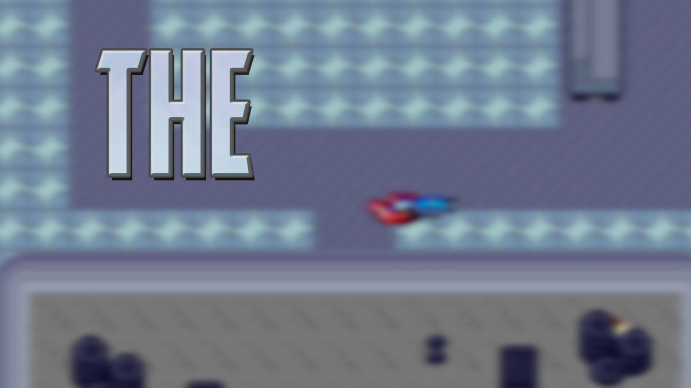
おきた。雨はザーザー。風がそれほどでもないのが助かる。停電が一番怖いので。
もちろん今日は外出せず、仕事です。なんだいつもの日常か。
おはようございます。
株、高まる配当再投資への期待 12兆円超の支払い想定
株、高まる配当再投資への期待 12兆円超の支払い想定
円下落、一時160円台 有事のドル買いで介入効果帳消し
円下落、一時160円台 有事のドル買いで介入効果帳消し
トークン連鎖倒産…について議論したい。
SaaS経由で生成AIを利用してた場合、クライアントがレートリミット間違えて支払い不能な額使い込んだ場合、請求がSaaS側に行ってSaaSも破産することない？？
連結子会社Gyre Therapeutics, Inc.による 企業プレゼンテーション資料公開に関するお知らせ
https://
ssl4.eir-parts.net/doc/2160/tdnet
/2830189/00.pdf
…
Polar Starチャレンジ 157日目午前の部
マイネームイズ
@MyNameIs_smrn
Polar Starチャレンジ 156日目午後の部 x.com/mynameis_smrn/…
居酒屋では話しかけられること多いけど、初めて行ったカレー屋でワンオペしてた女子の店員から「働かない彼氏とマジで別れたいんだけど、どうしたらいいですか？」って相談されて小1時間ほど話して帰ってきたの、自分でも「カレー屋で？」ってビックリしたし、そのうち松屋でも相談されそう。
「God of War LAUFEY」の発表や，「ACE COMBAT 8：WINGS OF THEVE」「鬼武者 Way of the Sword」の発売日などがアナウンスされた「State of Play | June 2, 2026」まとめ
https://
4gamer.net/s/G101200.2606
03022
…
「God of War LAUFEY」は20分，「Marvel’s Wolverine」は10分の動画でインゲームシーンを楽しめる
AVITAMINOSEさんがリポスト
東京 神田川にレベル4氾濫危険警報 今後氾濫するおそれ
https://
news.web.nhk/newsweb/na/na-
k10015139291000
… #nhk_news
東京 神田川にレベル4氾濫危険警報 今後氾濫するおそれ | NHKニュース
オタク起床
たぬかなさん、マジでヤバいことになってた・・・ #雑談・その他の話
たぬかなさん、マジでヤバいことになってた・・・ - オレ的ゲーム速報@刃の記事ページ
jin115.com
トランプ再選支えた3本柱、イラン攻撃で離反 非大卒・中南米系・若者
トランプ再選支えた3本柱、イラン攻撃で離反 非大卒・中南米系・若者
台風6号、天気＋αアプリで暴風雨・高波から身を守る
台風接近 天気＋αアプリで暴風雨・高波から身を守る
AVITAMINOSEさんがリポスト
【速報 JUST IN 】東京 目黒川にレベル4氾濫危険警報 今後氾濫するおそれ
https://
news.web.nhk/newsweb/na/na-
k10015139251000
… #nhk_news
東京 目黒川にレベル4氾濫危険警報 今後氾濫するおそれ | NHKニュース
ガス自由化10年目、新規参入シェア2割どまり 北電はLNG基地買収
ガス自由化10年目、新規参入シェア2割どまり 北海道電力はLNG基地買収
ローマ教皇、AI時代に警鐘。そこに「AI界の大物」の姿が
ローマ教皇、AI時代に警鐘。そこに「AI界の大物」の姿が | ギズモード・ジャパン
スマホスタンドに竿燈祭りの「縦バランス構造」を持ち込んだら、重さの感じ方が変わった #BuyPR
スマホスタンドに竿燈祭りの「縦バランス構造」を持ち込んだら、重さの感じ方が変わった | ギズモード・ジャパン
無事に帰宅
地下鉄のみの移動のため、遅れなく最寄駅まで到着。
ずぶ濡れになったのは職場と家までの徒歩のみ
靴が多少濡れたが被害は最小限で済んだ
次の夜勤まで家で大人しく待機します。
飯は冷食を買い込んだのでそれで済ませます。
ユウマボウズ
@Gc5RLsVaaV12052
今から夜勤
そして、明日の朝は台風直撃
果たして家まで無事に帰れるのか…
マンション 『タワマンを壊す日が来たら、「正しい顔をした人たち」が一斉に反対してきた話』架空の物語のはずなのに…リアルすぎて現実の事例が引用に集まる
『タワマンを壊す日が来たら、「正しい顔をした人たち」が一斉に反対してきた話』架空の物語のはずなのに…リアルすぎて現実の事例が引用に集まる
まとめで紹介されてるのは、定期借地権つきマンションの解体返却期限が来たらどうなるか……という近未来の短編小説。 すごいリアルで面白く、文章も巧みで一気に読んだ。マンションの建て替え・修繕、そして解体問題はこれからの日本の深刻課題のひとつ。↓
｢今年こそ大復活？｣ニコラス･ケイジ（62）"借金地獄"と"長い空白期"を乗り越えた執念の生存戦略
｢今年こそ大復活？｣ニコラス･ケイジ（62）"借金地獄"と"長い空白期"を乗り越えた執念の生存戦略
ニコラス・ケイジって近年は安っぽいB級映画にばかり出ている人のイメージだったけど、復活しつつあるという話。借金地獄とかたいへんだったのですね。『「真の演技派」で「世界的大スター」。20年前に手にしていたその両方の肩書きを、ニコラス・ケイジ（62）は、ついに取り戻すかもしれない』 ↓
ChatGPTに旅行相談する時代、令和トラベルが狙うのは「その先」だった
ChatGPTに旅行相談する時代、令和トラベルが狙うのは「その先」だった
AI時代に旅行代理店はどう変わるか。旅のプランをAIに作成してもらうのがもう当たり前になりつつある。AIが「単に検索を便利にするのではなく、旅の不安や面倒ごとを代わりに引き受けることが、AI時代に旅行代理店が選ばれる条件になる」と。ここでも生身の人間の信頼感の重視が。↓
大昔の中学生のころ、働いてた母がつくってくれた茶色ばかりの弁当がすごく恥ずかしかった。Voicyで語っています。↓
茶色いだけのお弁当の思い出 | 佐々木俊尚「毎朝の思考」/ Voicy - 音声プラットフォーム
茶色いだけのお弁当の思い出 | 佐々木俊尚「毎朝の思考」/ Voicy - 音声プラットフォーム
AVITAMINOSEさんがリポスト
TVやネットも「雨や風のアニメの実況中継」ばかり・・・と感じている方も多いのでは？
専門天気図に、今夜（3日21時）の空模様の骨格（由来や性質の異なる偏西風の位置や蛇行）等を落書き。
これを普通の天気図に載せ替えると、それっぽい解説図になる・・・はず？
#台風6号 #温帯低気圧化
ギズモード・ジャパン（公式）さんがリポスト
トラックボールの位置に関しても結構好みが分かれますね。
人差し指操作系と親指操作系があります。
エレコム的にいえばHUGEかISTかみたいな派閥ですね。
ホームポジションキープで便利なのが親指タイプ。
ホームポジションから外れるけど人差し指での緻密な操作ができるのが人差し指タイプ。
「無限の記憶を持つ思考能力」という新たな知能の誕生〜〜人間社会とAIが融合していく未来を考える（８） 佐々木俊尚の未来地図レポート Vol.911｜佐々木俊尚
「無限の記憶を持つ思考能力」という新たな知能の誕生〜〜人間社会とAIが融合していく未来を考える（８） 佐々木俊尚の未来地図レポート Vol.911｜佐々木俊尚
AIの時代には、記憶というもののありようが大きく変わる。有料メルマガで「無限の記憶を持つ思考能力」について論考しています。↓
【連邦更新】
セガの大名作「デイトナUSA」が、PCへまさかの勝手移植!!
デイトナUSAは「PS3 / Xbox360」以降、現行機種に移植されていないので、これはセガマニアにとって朗報かも?!
https://
renpou.com
住宅リースバック、解約や更新可否の告知必須に 国交省が指針明記へ
住宅リースバック、解約や更新可否の告知必須に 国交省が指針明記へ
高市政権支持率について、新聞テレビ各社の世論調査のばらつきが非常に大きいという指摘。一紙読んでるだけだと社会全体が見えなくてタコツボ化しちゃうよねえこれは。「テレビを見ている人は総じて、高市内閣は高い人気を持続しているとの印象をもち、毎日新聞を読んでいる人は高市人気は急落している
大手新聞社はなぜ 他紙の世論調査結果を報じないのか？ これでは自滅！ | COLUMN | 原子力産業新聞
大手新聞社はなぜ 他紙の世論調査結果を報じないのか？ これでは自滅！ | COLUMN | 原子力産業新聞
むくり。
話題の論文「AIレイオフトラップ」についての解説連投。AIで「1人解雇して節約した利益」は全部自社。しかし「その人がモノを買わなくなる損失」は多くの会社に分散。すると一会社レベルでは、解雇した方が得になってしまう。この連鎖が止められないというのが論文の主張。ベーシックインカムによる解
「囚人のジレンマそのもの」AIによる合理化を極めるほど、消費者が減って経済が回らなくなる…というアメリカ経済学者の論文が「やっぱりそうなるよね」と納得感がある
「囚人のジレンマそのもの」AIによる合理化を極めるほど、消費者が減って経済が回らなくなる…というアメリカ経済学者の論文が「やっぱりそうなるよね」と納得感がある
Torishima / INTPさんがリポスト
生成AIだけじゃおとわっかが作れるかと考えたらそりゃねという
あれは狂気の産物だからお利口な推論のAIだけでは到達し得ない
Torishima / INTP
@izutorishima
少し文脈ズレた話かもしれませんが、音MADを人間の作者抜きにAI生成するのは現状不可能だし、今後も最難関のタスクだと思います
（そもそもネタ選び自体が高度に人間がインターネットで交流し続ける中で生まれた、場合によっては狭い内輪のコンテキストに由来することが多いため） x.com/cat_thankyou/s…
『State of Play』発表まとめ！ライブビューイングや60分長尺で大々的に発表された新作ゲーム！『ゴッドオブウォー』新作、『鬼武者』新作発売日、『アンティルドーン2』など #ゲーム業界
『State of Play』発表まとめ！ライブビューイングや60分長尺で大々的に発表された新作ゲーム！『ゴッドオブウォー』新作、『鬼武者』新作発売日、『アンティルドーン2』など - オレ的ゲーム速報@刃の記事ページ
jin115.com
そうなのか！「子どもを性的対象とする者たちが情報交換するグループがあり、『愛知県内で事件を起こすと逮捕される』といった認識が広まっているという」。愛知県警は徹底的に捜査するからという理由で、実際検挙件数も近年全国トップらしい。↓
「愛知ではやるな」子ども狙う性犯罪者コミュニティで広がる“警告”…愛知県警はなぜ恐れられるのか - 弁護士ドットコムニュース
「愛知ではやるな」子ども狙う性犯罪者コミュニティで広がる“警告”…愛知県警はなぜ恐れられるのか - 弁護士ドットコムニュース
ファナック安部常務「造船ロボットを使えば１人で５人分の働き」
ファナック安部常務「造船ロボットを使えば1人で5人分の働き」
世界の至宝を脅かす乾燥に強いカビ 対策が裏目に - 日本経済新聞
世界の至宝を脅かす乾燥に強いカビ 対策が裏目に
文化財はカビ防止に低湿度な空間で保管されているが、なんと「好乾性真菌」という火山のカルデラや灼熱の砂漠のような乾燥した過酷な環境でも生き延びることができるカビが、世界中の博物館や美術館の収蔵庫に侵食しつつあるとか。↓
おはようございます。
“自宅スタバ”の再現レシピ
3兄弟ママ→“元店員”から聞いた“市販品で再現できるスタバ風メニュー”が60万再生 「おうちスタバめっちゃいい」「作ってみます」
（記事URLはリプから）
3兄弟ママ→“元店員”から聞いた“市販品で再現できるスタバ風メニュー”が60万再生 「おうちスタバめっちゃいい」「作ってみます」（1/2） | グルメ ねとらぼ
抜群のコスパで注目集める「AMZFAST」が，未発表の5Kウルトラワイド液晶や有機ELディスプレイをCOMPUTEX 2026で披露
https://
4gamer.net/s/G101195.2606
02063
…
価格破壊級のコストパフォーマンスで密かな人気のAMZFASTが，まだ公式Webサイトにも載っていない製品を多数披露した
なるせひろのりさんがリポスト
【特報】
ついに...
ついにこの日が来ました...!
**┈┈┈┈┈┈┈┈┈┈┈┈┈┈**
『え、社内システム全てワンオペしている私を解雇ですか？』
TVアニメ化決定です！
**┈┈┈┈┈┈┈┈┈┈┈┈┈┈**
続報をどうぞお楽しみに！
#ワンオペ解雇 #TVアニメ化
Buzz@本年もよろしくお願いしますさんがリポスト
5日間限定の無料券チャレンジ(^^)
今日はオリジナル菓子無料の1日目です♪
1）このアカウントをフォロー
2）この投稿をリポスト
3）抽選で毎日1万名様に無料券！結果は自動でお知らせ
キャンペーン詳細はこちら♪
サバイバルホラー「ILL」の最新トレイラーが公開に。不気味でグロテスクなモンスターとの戦いは，ゴア表現たっぷり
https://
4gamer.net/s/G091776.2606
03020
…
「Marathon」のシーズン2“NIGHTFALL”が本日より配信開始。6月10日までのオープンプレイウィークもスタート
https://
4gamer.net/s/G070952.2606
03021
…
昇給２０円のワイにかける言葉
昇給２０円のワイにかける言葉 : ハムスター速報
Microsoft、AndroidベースのAIエージェント基盤「Solara」発表 Snapdragon搭載のバッジ型端末も披露
Microsoft、AndroidベースのAIエージェント基盤「Solara」発表 Snapdragon搭載のバッジ型端末も披露
AVITAMINOSEさんがリポスト
先ほど目黒川が警戒水位（上部まで2.5ｍ）に達したため、サイレンでお知らせしました。川に近づくのは大変危険です。絶対に近づかないでください。また、目黒川周辺にお住まいの方は自宅の2階以上など、浸水の危険が少ない高い場所へ移動（垂直避難）してください。
目黒川水位警報
チェンジHD、月5万円でサイバー防御支援 AIが攻撃時の対応助言
チェンジHD、月5万円でサイバー防御支援 AIが攻撃時の対応助言
地方銀行、中国拠点の数が2割減
https://
nikkei.com/article/DGXZQO
UB08BAF0Y6A400C2000000/?n_cid=SNSTW005&n_tw=1780440171
…
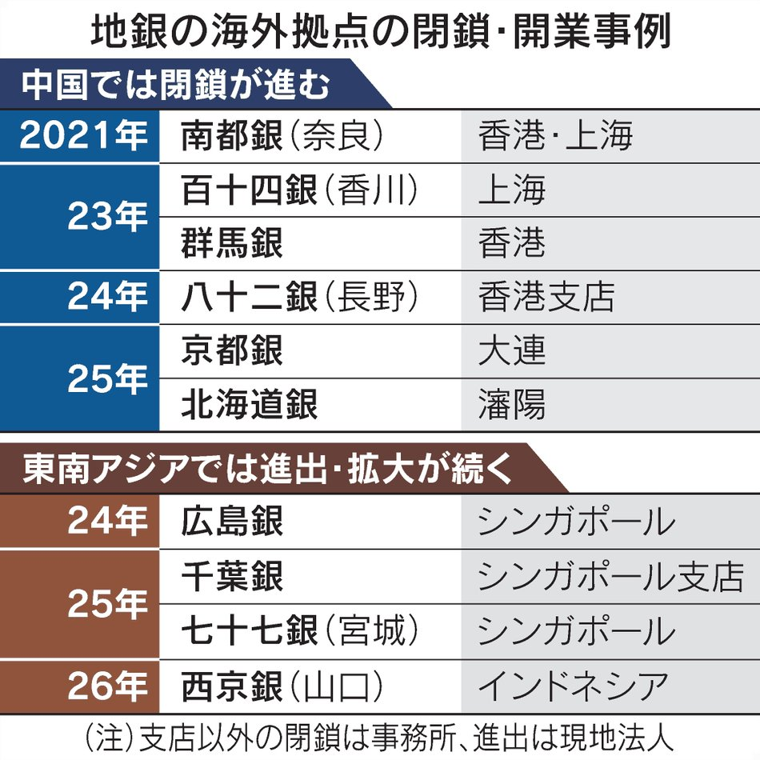
「No Rest for the Wicked」のPC版とPS5版が10月に正式リリース。見下ろし型視点を採用した歯ごたえのあるアクションRPG
https://
4gamer.net/s/G075962.2606
03018
…
カナダ・メキシコ、北米貿易協定の延長を正式要請 車の米調達が焦点
カナダ・メキシコ、北米貿易協定の延長を正式要請 車の米調達が焦点
IHI子会社がJAXAに不正請求 2016年以降で約5000万円超 JAXAが気付いて発覚 #ldnews
IHI子会社がJAXAに不正請求 2016年以降で約5000万円超 JAXAが気付いて発覚
「Rayman Legends Retold」が8月27日に発売決定。2013年の「レイマン レジェンド」を大胆に再構築したリビルド版
https://
4gamer.net/s/G101198.2606
03015
…
あのデロリアンも登場!? 「Stuntman: Hollywood」発表。映画などをモチーフにしたスタントに挑むカーアクションゲーム
https://
4gamer.net/s/G101203.2606
03019
…
台風6号の大雨や土砂災害に警戒 新たな防災気象情報の見方は？
https://
nikkei.com/telling/DGXZTS
00021490Q6A520C2000000/?n_cid=SNSTW005&n_tw=1780439159
…

サバイバルクラフト「RuneScape: Dragonwilds」がPS5で2026年秋発売。PS Plus Extra/Premium加入者は発売初日からプレイ可能
https://
4gamer.net/s/G090243.2606
03017
…
トランプ米政権、ブラジルに25％追加関税案 大統領選に｢介入｣懸念
トランプ米政権、ブラジルに25%追加関税案 大統領選に｢介入｣懸念
PC版でもZEROが遊べるならとても嬉しい。7の時はPS版を買わなきゃならなかったからな…
スタイリッシュ暗黒武侠アクション『Phantom Blade Zero』最新スペシャル映像！2026年夏にはさらなる映像公開&予約もスタート【State of Play】
https://
gamespark.jp/article/2026/0
6/03/167312.html?utm_source=twitter&utm_medium=social&utm_content=tweet
…
発売日は10月29日へと延期されました。
Haruhiko Okumuraさんがリポスト
ITエンジニアの攻撃性が話題ですが、ITエンジニアの防御力をあげるための本です。
というか、こういう本が普通に売ってたくらいには、ITエンジニアのまわりのほうが攻撃性高くないか？w
AVITAMINOSEさんがリポスト
【台風６号大型化】
台風６号が強風域の半径500kmを超える大型の台風になりました。日本付近で強風域の半径が広がること自体はあまり珍しくはありません。
日経平均株価、米株高が支え キオクシアに注目（先読み株式相場）
日経平均株価、米株高が支え キオクシアに注目（先読み株式相場）
トウカイのクマさんがリポスト
待ってたぜ…。
『ゴッド・オブ・ウォー』クレイトスの妻・フェイが主人公のスピンオフ『God of War Laufay』発表【State of Play】
https://
gamespark.jp/article/2026/0
6/03/167326.html?utm_source=twitter&utm_medium=social&utm_content=tweet
…
なるせひろのりさんがリポスト
『Stuntman: Hollywood』、やっぱりヤバいなこれ!!!! “スーパーアメリカドラマ大戦”やん!!!! おっさん（ワイ含む）泣くわ!!!!
＞ 「ワイルド・スピード」や「バック・トゥ・ザ・フューチャー」「ナイトライダー」「マイアミ・バイス」「デス・レース」
https://
blog.ja.playstation.com/2026/06/03/202
60603-sop-stuntman-hollywood/
…
なるせひろのりさんがリポスト
PS5『ウルヴァリン』大量の資料からリアルに作られた東京も舞台のひとつ。日本人に驚いてほしい
https://
famitsu.com/article/202606
/76591
…
治癒能力で骨の皮膚が再生する様子やパワフルな動きを再現。フォークリフトに敵を突き刺す豪快アクションも。赤いスーツの男は「デッドプールではないのは断言できます（笑）」
【再掲】みなさま台風にご注意ください
「台風舐めて死にかけた」 台風対策の大切さが分かる漫画に反響 作者「窓の側では絶対に寝ないようになりました」
https://
nlab.itmedia.co.jp/cont/articles/
3343867/
…
恐竜サバイバルホラー「The Lost Wild」が2027年に発売決定。食物連鎖の底辺で生き残りを図る
https://
4gamer.net/s/G101197.2606
03016
…
PS Plusの「クラシックスカタログ」に「ギタルマン」「サイオプス サイキック・オペレーション」「新 鬼武者 DAWN OF DREAMS」の3タイトルが登場
https://
4gamer.net/s/G012999.2606
02058
…
AVITAMINOSEさんがリポスト
【台風情報】
台風6号(チャンミー)は現在、三重県熊野市付近を東進しています。東海を中心に非常に激しい雨が断続的に降っていて、大雨災害の発生に厳重な警戒が必要です。
今日3日(水)昼過ぎにかけて関東に接近し、雨風が強まる見込みです。
https://
weathernews.jp/news/202606/03
0091/
…
AVITAMINOSEさんがリポスト
【気象情報】本日（6月3日）6時57分、気象庁より品川区、目黒区、大田区、世田谷区、渋谷区、中野区、杉並区、北区、板橋区、練馬区、東久留米市、西東京市、町田市にレベル３大雨警報が発表されました。東京地方では、低い土地の浸水に警戒してください。伊豆諸島北部では、暴風に警戒してください。
日本経済新聞 電子版（日経電子版）さんがリポスト
フジクラ、評価割れる水素調達リスク 市場は影響軽微との見方
決算:フジクラ、評価割れる水素調達リスク 市場は影響軽微との見方
ゴッド・オブ・ウォーの最新作「God of War LAUFEY」が発表。20分ロングトレイラーでゲーム導入シーンをたっぷり紹介
https://
4gamer.net/s/G999905.2606
03008
…
「God of War」新作の主人公は，シリーズおなじみのクレイトスではなく，彼の妻フェイ
下水汚泥から肥料 リン結晶化の施設、神戸市で本格稼働
https://
nikkei.com/article/DGXZQO
CD300Z00Q6A530C2000000/?n_cid=SNSTW005&n_tw=1780438840
…
リンは作物を育てるのに欠かせない肥料の主成分です。神戸市の久元喜造市長は「この取り組みが全国に広がれば、国内で必要な量のかなりの部分をまかなうことができる」と話します。
下水が肥料の「鉱脈」に、神戸で抽出施設 中東危機からも農業守る
「デイヴ・ザ・ダイバー」のスピンオフタイトル「Bancho the Chef」が発表に。一流の寿司職人を目指す若きバンチョの旅を描く
https://
4gamer.net/s/G101196.2606
03014
…
「電源タップは3～5年で交換推奨」は短すぎ？ 推奨する日本配線システム工業会に聞いてみた
「電源タップは3〜5年で交換推奨」は短すぎ？ 推奨する日本配線システム工業会に聞いてみた
シリーズ最新作『Until Dawn2』発表！2027年リリース予定―美しい無人島で直面する本当の恐怖…【State of play】
https://
gamespark.jp/article/2026/0
6/03/167325.html?utm_source=twitter&utm_medium=social&utm_content=tweet
…
宇宙的脅威と変形武器で空中格闘！名作アクションRPG続編『CONTROL Resonant』9月24日発売【State of Play】
https://
gamespark.jp/article/2026/0
6/03/167324.html?utm_source=twitter&utm_medium=social&utm_content=tweet
…
【速報】最新作『ゴッドオブウォー LAUFEY』発売決定！クレイトスの妻「フェイ」が主人公！舞台はエジプト神話！ #ゲーム業界
【速報】最新作『ゴッドオブウォー LAUFEY』発売決定！クレイトスの妻「フェイ」が主人公！舞台はエジプト神話！ - オレ的ゲーム速報@刃の記事ページ
jin115.com
なるせひろのりさんがリポスト
ゴッド・オブ・ウォー ラウフェイは、Santa Monica Studioのシリーズの次のメインストーリー章です。
新たに発表されたPS5アクションアドベンチャーの初のゲームプレイとストーリーの詳細:
http://
play.st/4fn8ZIW
長期金利2.6％割れ 「強め」10年債入札につかの間の安心感
長期金利2.6%割れ 「強め」10年債入札につかの間の安心感
日本車4社、5月の米販売6％増 ガソリン高でハイブリッドやEV好調
日本車4社、5月の米販売6%増 ガソリン高でハイブリッドやEV好調
iOS 26.5.1出たよ！ iPhone AirとiPhone 17の有線充電できない問題がやっと直る
iOS 26.5.1出たよ！ iPhone AirとiPhone 17の有線充電できない問題がやっと直る | ギズモード・ジャパン
続編「Until Dawn 2」がPS5向けに2027年登場。バズを狙う心霊ハンターたちが孤島で恐怖に襲われる
https://
4gamer.net/s/G999903.2606
03013
…
『Marathon』6月3日開幕のシーズン2「夜の訪れ」トレイラー公開―無料プレイウィークも実施【State of Play】
https://
gamespark.jp/article/2026/0
6/03/167323.html?utm_source=twitter&utm_medium=social&utm_content=tweet
…
消費税減税、欠かせぬ代替財源 「2027年春に1％」なら4兆円必要
https://
nikkei.com/article/DGXZQO
UA02AE90S6A600C2000000/?n_cid=SNSTW005&n_tw=1780438283
…
金融市場は懸念を強めています。社会保障国民会議が実施した市場関係者へのヒアリングでは「財源が具体化されない場合は金利が上昇するおそれがある」との声があがります。
消費税減税、代替財源欠かせず 成長投資・防衛費でも歳出圧力
凄惨な描写な際立つサバイバルホラーACT『ILL』最新ストーリー映像公開！不気味なクリーチャーだらけの研究施設で生き残れ【State of Play】
https://
gamespark.jp/article/2026/0
6/03/167322.html?utm_source=twitter&utm_medium=social&utm_content=tweet
…
AVITAMINOSEさんがリポスト
台風6号のタイムスケジュール詳細版です
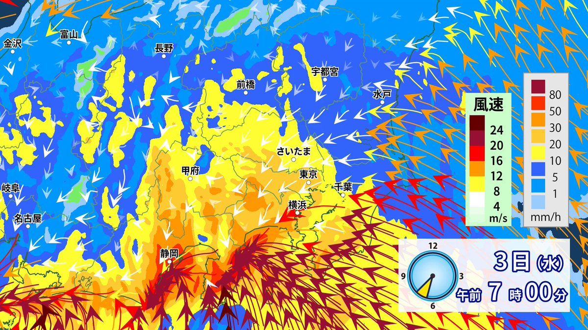
シリーズ最新作「SILENT HILL: Townfall」の最新映像が公開。2026年9月24日のリリースが明らかに
https://
4gamer.net/s/G066417.2606
03012
…
「PS Plus」今後の更新内容が判明！クラシックスカタログでは『ギタルマン』『新 鬼武者 DAWN OF DREAMS』などが6月より順次追加【State of Play】
https://
gamespark.jp/article/2026/0
6/03/167321.html?utm_source=twitter&utm_medium=social&utm_content=tweet
…
ファミマ、レジ袋のバイオプラ比率50%に引き上げ 原材料高に対応
ファミリーマート、レジ袋のバイオマスプラスチック比率50％に引き上げ
『ゴッド・オブ・ウォー』新作はクレイトスの妻が主人公！？【State of Play】
https://
gamespark.jp/article/2026/0
6/03/167320.html?utm_source=twitter&utm_medium=social&utm_content=tweet
…
PS5用ソフト「CONTROL Resonant」は9月24日発売。超常現象が起きたマンハッタンで，何が……？
https://
4gamer.net/s/G066882.2606
03011
…
なるせひろのりさんがリポスト
あの「ナイト2000」や「デロリアン」の姿も！ ド派手なカーアクションで街中を駆け巡る『Stuntman: Hollywood』発表【State of Play】
https://
gamespark.jp/article/2026/0
6/03/167319.html?utm_source=twitter&utm_medium=social&utm_content=tweet
…
『チェンソーマン』最終巻、まさかの追加ページに◯◯が描かれていて、ファンがブチギレ #漫画・アニメ等
『チェンソーマン』最終巻、まさかの追加ページに◯◯が描かれていて、ファンがブチギレ - オレ的ゲーム速報@刃の記事ページ
jin115.com
AVITAMINOSEさんがリポスト
和歌山 古座川 3つの地区で「越水」を確認 冠水被害も
https://
news.web.nhk/newsweb/na/na-
k10015139141000
… #nhk_news
和歌山 古座川 3つの地区で「越水」を確認 冠水被害も | NHKニュース
現地人を隠れみのにした外国企業の不正、東南アジアで摘発強化
https://
nikkei.com/article/DGXZQO
GS1658H0W6A410C2000000/?n_cid=SNSTW005&n_tw=1780400224
…
農業参入への規制があるタイでは、中国企業がタイ人の名義を借りて実質的に農地を運営するケースが複数発生。現地農家が打撃を受けており、政府が対応を急いでいます。
東南アジア、外資への名義貸し摘発強化 中国企業の不正相次ぎ
すぐ真似したいアイデア
「これは盲点でした！」ダイソーの配線カバー、“じゃない”使い方が218万再生 「すごい発明」「びっくり仰天」「大賞差し上げたい」
（記事URLはリプから）
「これは盲点でした！」ダイソーの配線カバー、“じゃない”使い方が218万再生 「すごい発明」「びっくり仰天」「大賞差し上げたい」（1/3） | ライフハック ねとらぼ
Wizards of the Coastにとっての日本市場とは？ John Hight社長に聞くマジック，デュエマ，そしてD&Dの成長戦略
https://
4gamer.net/s/G013687.2605
29053
…
Wizards of the Coastに課せられたミッションとは。来日した社長に話を聞いた
なるせひろのりさんがリポスト
『エースコンバット8』発売日が10月2日に決定
https://
famitsu.com/article/202606
/76733
…
PS2『エースコンバット・ゼロ ザ・ベルカン・ウォー』がパッケージ版早期購入特典およびダウンロード版プレオーダー特典に。他機種への移植は初。
シリーズ最新作『SILENT HILL: Townfall』9月24日発売決定！アクションシーンなど含む最新トレイラー公開【State of Play】
https://
gamespark.jp/article/2026/0
6/03/167318.html?utm_source=twitter&utm_medium=social&utm_content=tweet
…
20年ぶり新作『鬼武者 Way of the Sword』は9月25日発売！体験版も本日配信開始【State of Play】
https://
gamespark.jp/article/2026/0
6/03/167317.html?utm_source=twitter&utm_medium=social&utm_content=tweet
…
遂に発売日が発表！
「ACE COMBAT 8：WINGS OF THEVE」の発売日が10月2日に決定。早期購入特典やプレオーダー特典として「エースコンバット・ゼロ ザ・ベルカン・ウォー」を付属
https://
4gamer.net/s/G096901.2606
03010
…
アーリーアクセスは9月29日にスタート
Bangさんがリポスト
おはようございます、早起きしてくださった皆様ありがとうございます。今朝の日本は台風が来ており、皆様の無事をお祈りいたします。本日、ACE COMBAT 8 WINGS OF
名作リマスター『真・三國無双2 with 猛将伝 Remastered』最新トレイラー公開！『ORIGINS』主人公の“紫鸞”も参戦【State of play】
https://
gamespark.jp/article/2026/0
6/03/167316.html?utm_source=twitter&utm_medium=social&utm_content=tweet
…
『ACE COMBAT 8: WINGS OF THEVE』発売は2026年10月2日！早期予約特典に『エースコンバット・ゼロ』も付属【State of Play】
https://
gamespark.jp/article/2026/0
6/03/167315.html?utm_source=twitter&utm_medium=social&utm_content=tweet
…
『Ori』シリーズ開発元のハードアクション『No Rest for the Wicked』10月正式リリース！フルクロスプレイとクロスセーブに対応【State of Play】
https://
gamespark.jp/article/2026/0
6/03/167314.html?utm_source=twitter&utm_medium=social&utm_content=tweet
…
「真・三國無双2 with 猛将伝 Remastered」の発売日が10月1日に決定。「ORIGINS」の主人公“紫鸞”の参戦なども発表に
https://
4gamer.net/s/G097828.2606
03009
…
【速報】『アンティルドーン2』2027年発売決定！ #ゲーム業界
【速報】『アンティルドーン2』2027年発売決定！ - オレ的ゲーム速報@刃の記事ページ
jin115.com
恐竜を相手に生き残る、サバイバルホラーADV『The Lost Wild』2027年リリース決定！【State of Play】
https://
gamespark.jp/article/2026/0
6/03/167313.html?utm_source=twitter&utm_medium=social&utm_content=tweet
…
映画さながらのスペクタクル体験がコンソールにも！『Dune: Awakening』PS5版9月22日発売【State of Play】
https://
gamespark.jp/article/2026/0
6/03/167311.html?utm_source=twitter&utm_medium=social&utm_content=tweet
…
Torishima / INTPさんがリポスト
Microsoft、初の自社推論モデル「MAI-Thinking-1」発表 蒸留なしでゼロから学習
Microsoft、初の自社推論モデル「MAI-Thinking-1」発表 蒸留なしでゼロから学習
妖怪ハンターアクション「Kemuri: Hunt the Unseen」の最新映像が公開に。3人Co-opプレイなどの新情報も
https://
4gamer.net/s/G075950.2606
03007
…
「Dune: Awakening」のPS5版が9月22日リリース。シングルプレイヤーモードなどの追加要素も
https://
4gamer.net/s/G065189.2606
03006
…
「鬼武者 Way of the Sword」のリリース日が9月25日に決定。体験版が本日配信開始
https://
4gamer.net/s/G999903.2606
02056
…
【速報】『コントロール レゾナント』2026年9月24日発売！ #ゲーム業界
【速報】『コントロール レゾナント』2026年9月24日発売！ - オレ的ゲーム速報@刃の記事ページ
jin115.com
キオクシア、「累進配当」を導入 27年3月期下期にも開始
https://
nikkei.com/article/DGXZQO
UB024CM0S6A600C2000000/?n_cid=SNSTW005&n_tw=1780397315
…
累進配当は業績で配当金を減らさず、好業績なら増やす方式。半導体メモリーの需要増で業績が急拡大し、財務体質も改善してきたことから利益を株主にも振り向けます。
キオクシアホールディングスは2日、配当金を減らさずに維持するか増やす累進配当を導入する方針を明らかにした。早ければ2027年3月期下期にも配当を開始する。半導体メモリーの需要増に加え、財務体質が改善してきたため利益を株主に振り向ける。同日オンラインで開いた投資家向け説明会で、財務統括の河村芳彦副社長が「キャッシュフローの出方が強ければ下期にも配当するか検討する」と述べた。配当を実施すれば24年
nikkei.com
1作目をフルリメイクした『トゥームレイダー：レガシー・オブ・アトランティス』2027年2月12日に発売！ 臨場感たっぷりの最新映像も公開【State of Play】
https://
gamespark.jp/article/2026/0
6/03/167310.html?utm_source=twitter&utm_medium=social&utm_content=tweet
…
妖怪を狩って捕らえて身に着けてマルチプレイ！妖怪ハンターアクション『Kemuri: Hunt the Unseen』2027年登場【State of Play】
https://
gamespark.jp/article/2026/0
6/03/167309.html?utm_source=twitter&utm_medium=social&utm_content=tweet
…
【速報】『エースコンバット8』2026年10月2日発売決定！予約特典に『エースコンバット・ゼロ』移植版が付属！ #ゲーム業界
【速報】『エースコンバット8』2026年10月2日発売決定！予約特典に『エースコンバット・ゼロ』移植版が付属！ - オレ的ゲーム速報@刃の記事ページ
jin115.com
「Phantom Blade Zero」ゲームプレイ映像＆ストーリーの詳細が晩夏発表
https://
4gamer.net/s/G070944.2606
03002
…
初代「トゥームレイダー」のリイマジン作品「Tomb Raider: Legacy of Atlantis」の発売日が2027年2月12日に決定。3種類のエディションを用意
https://
4gamer.net/s/G096909.2606
03005
…
ドクター・ドゥーム率いる「ナイツ・オブ・ドゥーム」のメンバー公開！『MARVEL Tōkon: Fighting Souls』最新トレイラー公開【State of Play】
https://
gamespark.jp/article/2026/0
6/03/167308.html?utm_source=twitter&utm_medium=social&utm_content=tweet
…
ウルヴァリンとジーン・グレイが共闘する姿も。「Marvel’s Wolverine」インゲームシーンが中心の約10分にわたる最新映像を公開
https://
4gamer.net/s/G059409.2606
03003
…
【速報】『サイレントヒル Townfall』2026年9月24日発売！ #ゲーム業界
【速報】『サイレントヒル Townfall』2026年9月24日発売！ - オレ的ゲーム速報@刃の記事ページ
jin115.com
『デイヴ・ザ・ダイバー』前日譚となる『Bancho the Chef』発表！若きバンチョがアジアを旅する【State of Play】
https://
gamespark.jp/article/2026/0
6/03/167307.html?utm_source=twitter&utm_medium=social&utm_content=tweet
…
【速報】鬼武者最新作『鬼武者 Way of the Sword』2026年9月25日発売！ #ゲーム業界
【速報】鬼武者最新作『鬼武者 Way of the Sword』2026年9月25日発売！ - オレ的ゲーム速報@刃の記事ページ
jin115.com
カナダ鉱山大手、中国に頼らないレアアース供給確立 日本企業に販売
https://
nikkei.com/article/DGXZQO
GN200F00Q6A520C2000000/?n_cid=SNSTW005&n_tw=1780425391
…
ブラジルの鉱山開発と米国などの技術を組み合わせます。
カナダ鉱山大手、中国に頼らないレアアース供給確立 日本企業に販売
「マーベル闘魂」，ドクター・ドゥーム率いる「ナイツオブドゥーム」を紹介する最新映像を公開。マグニートー，グリーン・ゴブリン，カーネイジが参戦
https://
4gamer.net/s/G091625.2606
03004
…
なるせひろのりさんがリポスト
『トゥームレイダー：レガシー・オブ・アトランティス』2027年2月12日に発売決定【State of Play】
https://
dengekionline.com/article/202606
/76811
…
1996年に発売された1作目のリメイクとなる本作。
ジャングルや古代遺跡、砂漠などがUnreal Engine 5で美しく描かれます
『レイマン』の新作『Rayman Legends Retold』10月1日発売！最大4人までのローカル協力プレイにも対応【State of Play】
https://
gamespark.jp/article/2026/0
6/03/167306.html?utm_source=twitter&utm_medium=social&utm_content=tweet
…
食品消費税「27年4月に1%」調整 首相が判断へ
https://
nikkei.com/article/DGXZQO
UA021110S6A600C2000000/?n_cid=SNSTW005&n_tw=1780399620
…
税率をゼロとした場合、レジ改修に「最大10カ月〜1年程度」を要するという指摘も。経産省の聞き取りに小売業界の団体などは「税率1%なら大半が半年で対応可能だ」と回答していました。
食品消費税「27年4月に1%」調整 首相6月中判断へ、レジ改修最大半年
なるせひろのりさんがリポスト
【State of Play】
『MARVEL Tōkon: Fighting Souls』にマグニートー、グリーンゴブリン、カーネイジが参戦決定！
あわせて日本語ボイスキャストも発表！
マグニートー：大塚芳忠
グリーンゴブリン：山路和弘
カーネイジ：岡野浩介
詳しくはこちら⇒
https://
play.st/4fnKiME
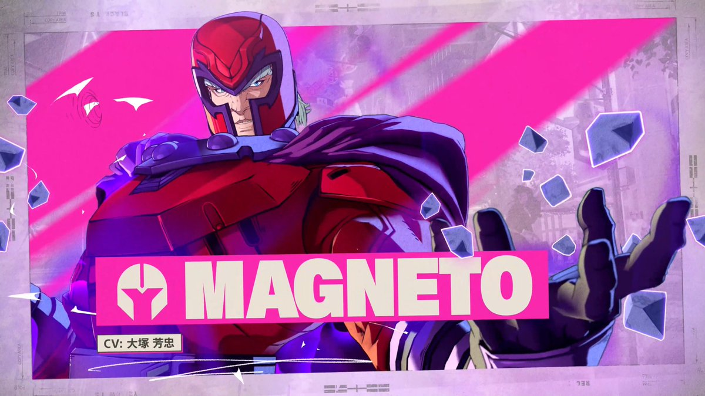
【速報】トゥームレイダー初代のリメイク作品『トゥームレイダー レガシーオブアトランティス』2027年2月12発売！ #ゲーム業界
【速報】トゥームレイダー初代のリメイク作品『トゥームレイダー レガシーオブアトランティス』2027年2月12発売！ - オレ的ゲーム速報@刃の記事ページ
jin115.com
9月15日発売の注目作『Marvel’s Wolverine』最新映像が公開！ジーン・グレイとの共闘やスリリングなカーチェイスの場面も【State of play】
https://
gamespark.jp/article/2026/0
6/03/167305.html?utm_source=twitter&utm_medium=social&utm_content=tweet
…
【速報】『KEMURI ケムリ』妖怪ハンターの3人協力プレイアクションゲーム！2027年発売 #ゲーム業界
【速報】『KEMURI ケムリ』妖怪ハンターの3人協力プレイアクションゲーム！2027年発売 - オレ的ゲーム速報@刃の記事ページ
jin115.com
なるせひろのりさんがリポスト
インソムニアックの「ウルヴァリン」ゲームでウルヴァリンとジーン・グレイが一緒に戦うゲームプレイ
【速報】レイマンシリーズ最新作『RAYMAN LEFENDS RETOLD』2026年10月1日発売！ #ゲーム業界
【速報】レイマンシリーズ最新作『RAYMAN LEFENDS RETOLD』2026年10月1日発売！ - オレ的ゲーム速報@刃の記事ページ
jin115.com
｢トランプ命名ラッシュ｣空港から紙幣まで 礼賛と自己顕示欲に批判
https://
nikkei.com/article/DGXZQO
GN01AHR0R00C26A6000000/?n_cid=SNSTW005&n_tw=1780425115
…
歴代の米大統領の名前や肖像が公共物などに刻まれることは珍しいことではありません。
しかしトランプ氏の場合は現職のため政治色が際立っています。
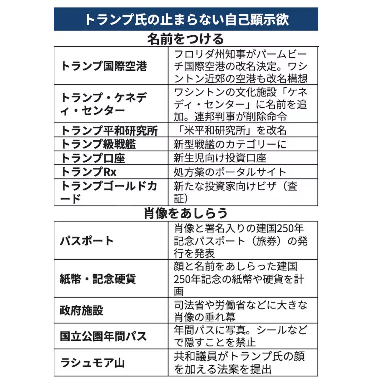
Microsoft、AI｢スカウト｣でパソコン自動化 OpenClawでTeams操作
https://
nikkei.com/article/DGXZQO
GN029C30S6A600C2000000/?n_cid=SNSTW005&n_tw=1780431334
…
サティア・ナデラCEOが「面倒な作業を大幅に減らし、本来の仕事に集中できるよう助けてくれる新しい方法だ」と紹介しました。

なるせひろのりさんがリポスト
Insomniacの「Wolverine」ゲームにおけるステルスプレイの初公開映像
膵臓がん薬、治験で生存期間2倍 学界でスタンディングオベーション
https://
nikkei.com/article/DGXZQO
GN290HL0Z20C26A5000000/?n_cid=SNSTW005&n_tw=1780434319
…
米膵臓がんアクションネットワークは「このニュースが膵臓がん患者にとってどのような意味を持つのかを考えると、深く感動し、涙がこぼれた。今年中の正式承認を期待している」とコメントしています。
膵臓がん新薬ダラクソンラシブ、治験で生存期間2倍 歴史的転換に米学界でスタンディングオベーション
「空売り王」の逆襲、証券詐欺の有罪で裏目に
「空売り王」の逆襲、証券詐欺の有罪で裏目に
世界の外貨準備、金が米国債を30年ぶり逆転 大国の「米国離れ」着々
https://
nikkei.com/article/DGXZQO
GR02BRV0S6A600C2000000/?n_cid=SNSTW005&n_tw=1780431865
…
米国債の売買動向をみると、最も売却したのは中国で計1400億ドル（約22兆円）の売り越しでした。
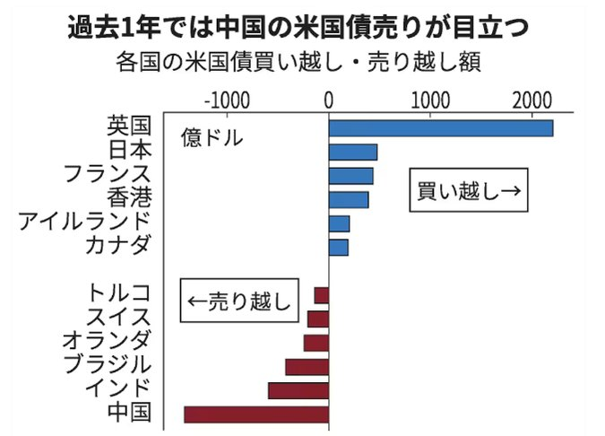
Haruhiko Okumuraさんがリポスト
Microsoft、自律エージェント「Scout」発表 OpenClawベースでMCP対応
Microsoft、自律エージェント「Scout」発表 OpenClawベースでMCP対応
AVITAMINOSEさんがリポスト
和歌山県古座川町にレベル５の氾濫特別警報が発表されたけど、ちょうど下層から上層まで345K以上の暖湿気の流入域北縁（スパイラルバンドあるいはアイウォール）が対応している模様。
これが今後の要注意域の目安になる・・・かも？
AVITAMINOSEさんがリポスト
03時の実況（レーダー画像＋赤外画像）に気象庁MSMベースであれこれ落書き。
昨夕から台風南側にヒマラヤ北側由来の乾燥偏西風が流入し東への加速と雨雲の東側への偏在が顕著に。
さらに天山山脈南縁由来の偏西風が台風南側へ。
暴風域が消滅し温帯低気圧が進む（強風域拡大？）ことに？？
NYダウ228ドル高、AI銘柄がけん引 中東不安で原油93ドル台に上昇
NYダウ228ドル高、AI銘柄がけん引 中東不安で原油93ドル台に上昇
トランプ氏、6度目の「合意間近」宣言 対イラン交渉で繰り返す挫折
トランプ氏、6度目の「合意間近」宣言 対イラン交渉で繰り返す挫折
AVITAMINOSEさんがリポスト
【速報 JUST IN 】和歌山 古座川に氾濫特別警報 すでに氾濫発生か 最大級の警戒
https://
news.web.nhk/newsweb/na/na-
k10015139051000
… #nhk_news
和歌山 古座川にレベル5氾濫特別警報 氾濫発生 最大級の警戒 | NHKニュース
食品消費税「27年4月に1%」調整 首相6月中判断へ、レジ改修最大半年
https://
nikkei.com/article/DGXZQO
UA021110S6A600C2000000/?n_cid=SNSTW005&n_tw=1780423110
…

このツイートしたのもう3年前ってマジかよ……
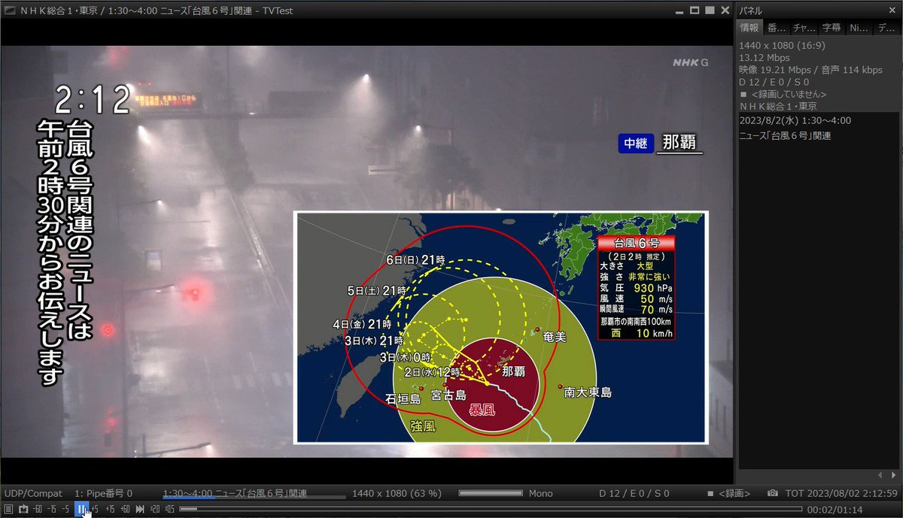
Torishima / INTP
@izutorishima
毎夏恒例の NHK の深夜の台風ニュースの BGM 、めっちゃ心打たれるいい曲なんだけどこのあまりに世紀末みたいな映像と一緒に見ると「こうして人類は滅亡していくんだな…」と深い絶望に襲われるので正直すき
日本経済新聞 電子版（日経電子版）さんがリポスト
25年の出生率、過去最低の公算 将来推計「悲観」シナリオに現実味
25年の出生率、過去最低の公算 将来推計「悲観」シナリオに現実味
日本経済新聞 電子版（日経電子版）さんがリポスト
Microsoft、AI｢スカウト｣でパソコン自動化 OpenClawでTeams操作
Microsoft、AI｢スカウト｣でパソコン自動化 OpenClawでTeams操作
台風6号、首都圏で線状降水帯の恐れ 交通機関の混乱注意
台風6号、首都圏で線状降水帯の恐れ 交通機関の混乱注意
ゴールドマンCEO、巨大IPOに沸く米株市場「恐怖よりも欲上回る」
ゴールドマンCEO、巨大IPOに沸く米株市場「恐怖よりも欲上回る」
日本経済新聞 電子版（日経電子版）さんがリポスト
東京都EV補助が最大130万円に 国補助と併用可、トヨタやテスラ高く
東京都EV補助金が最大130万円に 国補助と併用可、トヨタやテスラ高く
日本経済新聞 電子版（日経電子版）さんがリポスト
米国に名ばかり富裕層 「ミリオネア」2400万人、豊かさ感じず倹約
米国に名ばかり富裕層 「ミリオネア」2400万人、豊かさ感じず倹約
ふぇむ(せかんど！)さんがリポスト
関東平野みたいな平地はまだいいけど、山間部は本当にアテにならん
雨雲レーダーの予測って地形パラメータ入ってないよね
山にぶつかって強雨になるところとか予測できずに流れていっちゃう
中道改革連合、とんでもないことを言い始めるｗｗｗｗｗ #政治
中道改革連合、とんでもないことを言い始めるｗｗｗｗｗ - オレ的ゲーム速報@刃の記事ページ
jin115.com
レアアース調査の無人探査機、海洋機構など開発へ 6000メートル潜航
https://
nikkei.com/article/DGXZQO
SG114OX0R10C26A3000000/?n_cid=SNSTW005&n_tw=1780423017
…

Torishima / INTPさんがリポスト
NHK特有の人類終末BGM台風情報やってる
Torishima / INTP
@izutorishima
毎夏恒例の NHK の深夜の台風ニュースの BGM 、めっちゃ心打たれるいい曲なんだけどこのあまりに世紀末みたいな映像と一緒に見ると「こうして人類は滅亡していくんだな…」と深い絶望に襲われるので正直すき
ビクトリアズ・シークレット、高級志向と税還付で業績回復 株50%高
ビクトリアズ・シークレット、高級志向と税還付で業績回復 株50%高
Microsoft、NVIDIAのSoC搭載でAI特化のミニPC「Surface RTX Spark Dev Box」披露
Microsoft、NVIDIAのSoC搭載でAI特化のミニPC「Surface RTX Spark Dev Box」披露
成人女性がブルマ履くのってエッチだよね(´･_･`)
AVITAMINOSEさんがリポスト
【速報】台風情報 史上4番目に早い上陸
6月3日(水)4時半頃、台風6号(チャンミー)の中心は和歌山県南部に上陸しました。
台風が日本に上陸するのは昨年9月の台風15号以来で、6月3日の上陸は1951年からの統計史上4番目に早い上陸です。
https://
weathernews.jp/news/202606/03
0031/
…
世界の外貨準備、金が米国債を30年ぶり逆転 大国の「米国離れ」着々
世界の外貨準備、金が米国債を30年ぶり逆転 大国の「米国離れ」着々
基本無料＆協力プレイ対応オンライン弾幕ARPG『Runeward Online』発表―レア装備を集めてルールを変える強力なビルドを構築しよう
https://
gamespark.jp/article/2026/0
6/03/167304.html?utm_source=twitter&utm_medium=social&utm_content=tweet
…
多数のプレイヤーが集まり、チャットや取引も可能なオンラインロビーが存在。
@RunewardOnline

トランプ氏、最先端AIを事前審査する大統領令 公開30日前までに
トランプ氏、最先端AIを事前審査する大統領令 公開30日前までに
※AGIラボ所有のBusinessアカウントではまだ確認できませんした。。。みなさんはどうでしょうか？
公式投稿：
OpenAI
@OpenAI
https://
openai.com/index/codex-fo
r-every-role-tool-workflow/
…
50対50ベトナム戦争FPS『Hell Let Loose: Vietnam』8月13日へ発売延期…！オープンベータフィードバック受け品質向上の余地ありと判断
https://
gamespark.jp/article/2026/0
6/03/167303.html?utm_source=twitter&utm_medium=social&utm_content=tweet
…
【速報】OpenAI、Codexの新機能「Sites」を発表
ポイント：
・Codexアプリ内でWebサイトやアプリを（ワークスペース内に）公開・共有
・作成したコンテンツはOpenAIホストのURLで共有
・「@ Sites」でデプロイURL取得までを自動化
・ChatGPT Business／Enterprise向け

Haruhiko Okumuraさんがリポスト
ブログ書きました： ［速報］マイクロソフト、UNIX系コマンドをWindowsに移植「Coreutils for Window」一般公開
［速報］マイクロソフト、UNIX系コマンドをWindowsに移植「Coreutils for Window」一般公開
ギズモード・ジャパン（公式）さんがリポスト
Ableton が出した Extensions SDK で作ってみた。Live 12 の中で動く拡張。Webカメラに映した手で、降ってくる音符を弾いてメロディを作る楽器。今の Set のスケールとコード進行に乗るから外れない。弾いた演奏はそのまま MIDI トラックに焼ける。
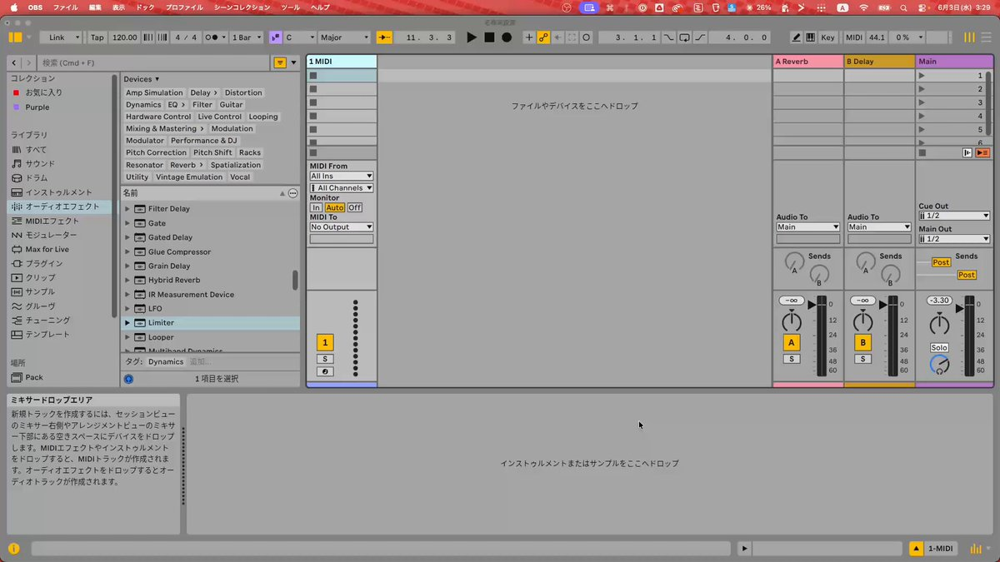
AbletonJP
@AbletonJP
Ableton Live 12 Suiteをさらに拡張するためのオープンなJavaScriptツールキット"Extensions SDK"のパブリックベータが本日公開…！
Torishima / INTPさんがリポスト
音mad界隈の著作権侵害野郎です
実はSora2がリリースされた直後あたりに完全AI生成での音madが投稿されたのですが
どうしても
「既存の作品を切り貼りして作る」より
「音madっぽい動画を出力しただけ」止まりでした
明確に版権曲が流れた時はワロた
AI生成の音MAD合作
https://
nicovideo.jp/watch/sm454684
05
…
Torishima / INTP
@izutorishima
少し文脈ズレた話かもしれませんが、音MADを人間の作者抜きにAI生成するのは現状不可能だし、今後も最難関のタスクだと思います
（そもそもネタ選び自体が高度に人間がインターネットで交流し続ける中で生まれた、場合によっては狭い内輪のコンテキストに由来することが多いため） x.com/cat_thankyou/s…
Haruhiko Okumuraさんがリポスト
本日、世界クラスの新しいMAIモデル7つを発表できることを大変嬉しく思います。これらは、私たちが考えるAIの新時代を象徴しており、あなたがコントロールを握り、最先端を維持できるように設計されています。
Haruhiko Okumuraさんがリポスト
えっ？？心理学の調査回答の45%がLLM生成だって？
nature
@Nature
「私たちは、行動科学や社会科学への信頼が、LLM汚染という絶え間ない脅威によって損なわれる時期に近づいていると思う」と心理学者ビョルン・ホンメルは語る。「そして、今のところ、私たちにそれに対処する術はない。」
https://
go.nature.com/49yz442
湘南ペンギンさんがリポスト
よくある利用形態の
千頭ー奥大井湖上駅下車ー井川 帰りは降りずに帰る
或いはその逆
10500円コース
超絶ぼったくり
誰が乗るの？
乗り鉄パウエル
@foreverEF5861
大井川鉄道井川線
個人的に値上げよりも7/1のダイヤの方が気になってしまった…
川根両国〜川根小山とひらんだはほぼ廃駅同然というか…訪問ほぼ困難な駅になるんだな
あそこらへん山ん中で行ったところで何もないから妥当なのかもしれんけど
鉱山大手アクララ、ブラジルで中国企業に頼らないレアアース供給確立
カナダ鉱山大手、中国に頼らないレアアース供給確立 日本企業に販売
Haruhiko Okumuraさんがリポスト
マイクロソフトと協力して、企業にClawsを導入するなんて、こんな名誉な機会はない！
とりしま (Sub I/O)さんがリポスト
深夜のrkgk
日本経済新聞 電子版（日経電子版）さんがリポスト
ラスベガスのカジノ大手2社が身売り オンライン賭博の台頭など直撃
ラスベガスのカジノ大手2社が身売り オンライン賭博の台頭など直撃
ローソンに行ったX民「うわ臭ッ！なんやこの店内！？」→衝撃の光景を目の当たりにしてしまう・・・ #酷い話・事件
ローソンに行ったX民「うわ臭ッ！なんやこの店内！？」→衝撃の光景を目の当たりにしてしまう・・・ - オレ的ゲーム速報@刃の記事ページ
jin115.com
輿水畏子さんがリポスト
ぼんやりマーナノ（微ネタバレ）
企業は石油製品が足りないと言い、業界団体は足りてるという理由。
業界団体は、許認可などがあり政権から睨まれると役員は死活問題。

himuro Reborn
@himuroReborn398
よく報じたなぁ News every
政府側が企業に関与
「政府発信と齟齬があることについては発言控えるように」
「人事上の処遇 不利になる」
日本経済新聞 電子版（日経電子版）さんがリポスト
レアアース調査の無人探査機、海洋機構など開発へ 6000メートル潜航
レアアース調査に探査機、JAMSTECが開発へ 水深6000メートル潜航
内田洋行、AIでオフィスの座席利用を検知 導入コスト３分の１に
内田洋行、AIでオフィスの座席利用を検知 導入コスト3分の1に
Torishima / INTPさんがリポスト
AIインフルエンサーは、今晩は眠れないだろうね。
OpenAI ビジネス向けに発表したのは、Codexの各種機能。「プラグイン_Plugins」「サイト_Sites」「アノテーション_Annotations」
輿水畏子さんがリポスト
#まのさばネタバレ
地銀の中国拠点2割減、東南アジアへシフト 地方企業の対中戦略に影
地方銀行の中国拠点2割減、東南アジアへシフト 地方企業の対中戦略に影
車椅子、足の悪い/ない人の足ではあるけど、はっきり言って自転車どころか下手したら三輪車より大変だからね
乙武洋匡
@h_ototake
「またその話かよ」と思われるかもしれませんが、一向に減ることがないので何度でも言わせてください。
車椅子やベビーカーは二足歩行と違って真横には動けないので、歩きスマホで突進してくる方を避けることが困難です。
危険なので本当にやめていただきたいです。 x.com/tsuisoku777/st…
空港から紙幣まで｢トランプ命名ラッシュ｣ 礼賛と自己顕示欲に批判
空港から紙幣まで｢トランプ命名ラッシュ｣ 礼賛と自己顕示欲に批判
膵臓がん新薬、生存期間2倍 米学界でスタンディングオベーション
膵臓がん新薬ダラクソンラシブ、生存期間2倍で歴史的転換 米学界でスタンディングオベーション
Torishima / INTPさんがリポスト
突然失礼します！以前個人的に作ったヤッチョGPTのプロンプトがありまして、よろしければ参考までにお役立てください！
細かい説明はリンク先にあります（すぐに試せる作成済み GPTs もあります）
https://
github.com/tsukumijima/Ya
cchoGPT
…
台風なのでコロッケいただきました
これは違憲立法だよ
損壊の対象物は
「社会通念上認められる有体物」
罰則の適用判断が
「客観的な事情を勘案して総合的に判断」
こんな曖昧な刑罰規定あり得ない
いや〜使い切らないとなUnlimited・・・１ヶ月分すでにちゃんと使いきれてないんだよな
クラスで2番目に可愛い女の子と〜、だんだ？一番可愛いのはまきくんではという気がしてきた件
パヨク「なんで捕まえないんだよ！！」
右翼「なんで捕まえないんだよ！！」
警察官「…。」
その場で警察官が「総合的に勘案して判断」して逮捕できるはずがない
たぶん第三条関係を使って逃げる
警察官が可哀想なだけの法律
エターナル総書記
@kelog21
「客観的な事情を総合的に勘案して判断」していいのは外交や法適用の運用だけ。
刑罰規定の条文にこんなこと書くのは論外
「刑罰法規は内容を明確にしなさい」ってのは、刑法が曖昧だといつ誰が罰せられるか分からず皆安心して暮らせないっていう憲法より更に基本的な近代法の原理なの
Torishima / INTPさんがリポスト
この問題は、たぶん「クリエイティブな人間が少ない」って事じゃなく、
「今の経済構造では少し狂ってる人でないとクリエイトの脳内報酬は少ない」って事だと思う
儲からないと普通の人は労力と秤にかけて喜びが大きくないと本気にはならないだろうし
(全て無料な社会になったら可能性あり…？)
Torishima / INTP
@izutorishima
以前も同じ話を呟いたけど、サムアルトマンは Sora2 を大衆にバラ撒いて『一般庶民が内輪/自己満向けショート動画をポン出し生成して楽しむ世界になるか』を壮大に社会実験したが、ハードルの低さにも関わらず巨額のコストを正当化できるほど人が定着せず、賭けに負けたことで証明されてしまったよな x.com/sharp__6/statu…
ここに第三条（罰則）を追加する法改正なら定義条項も要らなかったのに
後は外国国旗の損壊罪と全く同じにして立法完了
外国国旗損壊罪と同じく誰も逮捕されない
レプリコ、今季のダークホースすぎる・・・
シンプルにホンと引きのパワーがあるし丁寧でグッと掴まれる何かがある
うますぎる・・・
名古屋襟まで出すのか、すご
HANAMIYABI
@HANAMIYABI8
【新情報お届け】
HANAMIYABIから新商品
『名古屋型セーラー服』がついに登場♪
新しく仲間入りしました
詳細はHPでご確認ください
※名古屋型セーラー服は本場名古屋工場での縫製製品です
#HANAMIYABI
#名古屋型セーラー
あのトラッキングシステムって画像認識じゃなくて衛星測位だったんだ
すごい精度出るのね
netkeiba
@netkeiba
【JRA発表】
トラッキングシステム対象競走を拡大
特別&新馬&障害で1日最大6競走へ
https://
news.netkeiba.com/?pid=news_view
&no=333100
…
超零細保有数ではあるものの、株主としても全件、反対。もっとまともな提案を持って来い。
組合の一部からの社長・会長解任提案が「ごもっとも」なわけないだろ。他の提案もなかなか酷い(7号・8号は特に。6号は一見傾聴に値するかも、と思わせておいて、委員に組合関係者を含めろとか書いてあって論外)もので、何一つJR東日本経営陣が同調できるものはないと思うけども。
Haruhiko Okumuraさんがリポスト
（青）チャートですよね．
数学的にも，
コミュニケーション（マトモな採点者へのメッセージ）としても，
初学者向けの安全策としても，
教育的にも，
どこからどう見ても下策にしか思えない文言です．
こんな文言を無批判に学習参考書に載せてしまう感性は，個人的にはかなり苦手です．
林 俊介 @林数学教室
@884_96
"[注意] 問題文に書かれていなくても，最大値・最小値を求める問題では，それらを与える x の値を示しておくのが原則である。" (某参考書より)
マジカ......ベンキョウニナルナ......
Wordle 1,810 4/6
「客観的な事情を総合的に勘案して判断」していいのは外交や法適用の運用だけ。
刑罰規定の条文にこんなこと書くのは論外
「刑罰法規は内容を明確にしなさい」ってのは、刑法が曖昧だといつ誰が罰せられるか分からず皆安心して暮らせないっていう憲法より更に基本的な近代法の原理なの
#techno / #DiffuseReality
Dave Mech - Off into the Woods (Live at Oxi Berlin)
https://
youtube.com/watch?v=ubeole
DPVV8
…
Label: Diffuse Reality
Artist: Dave Mech
Title: Berlin Seite LP
Track: Off into the Woods
Release Date: June 26, 2026
Premiere of "Off into the Woods" by Dave Mech, taken from "Berlin S...
youtube.com
米国の求人件数、4月は762万件 専門職回復で２年ぶり高水準に
米国の求人件数、4月は762万件 専門職回復で2年ぶり高水準に
#dnb / #OmniMusic
Eternal DnB - Pending Skies
https://
youtube.com/watch?v=IPe_9H
eQnic&list=PL_F42GZ969hiF-tWFt6DFT0O0l_-BEym-&index=6
…
"Eternal DnB is back with his first full length LP. This is a stunning cross section of his repertoire as his deep beats take on a myriad of different guises."
#bassline #house / #Critical
Enei & Spectral - Pixelate
https://
youtube.com/watch?v=ehetKq
HKsgs&list=PL_F42GZ969hiF-tWFt6DFT0O0l_-BEym-&index=5
…
Torishima / INTPさんがリポスト
未だに新規AAが作られるこめかみっ！実況スレすげぇな #komekamigirls #こめかみっ
#dnb / #CybeRecordings
CÅARL - BITUMEN ESIR
https://
youtube.com/watch?v=HPnMq4
oaBFI&list=PL_F42GZ969hiF-tWFt6DFT0O0l_-BEym-&index=4
…
うーん、UKとは明らかに違う、このインダストリアルな感じは往年のジャーマン・ドラムンベースっぽい感じがする。
Torishima / INTPさんがリポスト
レプリコ、見てる人はだいたい絶賛してる気がするけど、そもそも見てる人が少ない
罰則規定でこの条文、あり得ないよ…
この案は流石に止めないと立法府として無責任すぎる
今まで見たどの炎上法案よりも稚拙
玉木雄一郎（国民民主党）
@tamakiyuichiro
これで本当に自民党や法制局の了解が取れたのか？？
2条2項は極めて広範に表現の自由を規制してるし、罰則が適用されるかどうかも「総合勘案」で罪刑法定主義に反する。
私も国旗はしっかり守るべきとの立場だが、さすがにこれは立法論として荒過ぎる。憲法裁判所があれば間違いなく違憲立法でしょう。
オープンワールド工場建設SLG『Satisfactory』大型アップデート1.2配信―天気システム大幅強化や車両パス全面刷新など多数の新要素追加
オープンワールド工場建設SLG『Satisfactory』大型アップデート1.2配信―天気システム大幅強化や車両パス全面刷新など多数の新要素追加 | Game*Spark - 国内・海外ゲーム情...
なるせひろのりさんがリポスト
【続報】埼玉・川越の違法モスク、撤去計画書を出した翌月に堂々と開所式をやっていた
建設中、市が何度も中止要請
→「日本語ワカラナイ」で完全無視
→ 完成
→ 市の撤去要請に「5年以内に撤去します」
→ 翌月、パキスタン大使呼んで盛大開所式 ← new!!!
周囲は高いフェンスで完全ガード
もえるあじあ ･∀･
@moeruasia01
【続報】川越無許可モスク パキスタン大使館が声明
・大使は「全ての許認可取得済みと説明を受けて」イベントに参加
・在日パキスタン人全員に「日本の法律を遵守」「許認可を得た後にのみ建設に着手」と強く指示
・「日本の役所に速やかに協力するように」とも要請 x.com/moeruasia01/st…
ありがとうございます！！！！！！
輿水畏子さんがリポスト
QWQ
[涂鸦] 仅限推特关注者(1 图像) - cramez49 的 Poipiku
poipiku.com
#techno / #VaultRecords
Toobris - The Golden Rule
https://
youtube.com/watch?v=-sCqUd
tyOpU&list=PL_F42GZ969hiF-tWFt6DFT0O0l_-BEym-&index=3
…
Artist: Toobris
Title: Train Dreams
Label: Vault Records
Catalogue: VAULTREC013
Release date: May 27, 2026
クラにかは青春アニメにあって欲しい青少年のダサい恐れや不安や卑屈さがあるんだよ。天使様はそれがないのがいけない。
Mythosにアクセスできる国が15ヵ国まで拡大。150の組織が使えるように。とは言えどうせすぐMythos級モデルが一般公開されるんダルルォ？
Anthropic
@AnthropicAI
Project Glasswing を拡大しています。Claude Mythos Preview へのアクセスを、15カ国以上を拠点とする約150の追加組織に拡張しました。
この拡大と Project Glasswing の今後の計画について詳しく読む:
https://
anthropic.com/news/expanding
-project-glasswing
…
配当金で返済できるのに、金のなる木を伐採するのは間違っている
こんな低利で資金調達できる手段は他にない
ロスジェネ勤務医
@losgenedoctor
もし株で儲かって住宅ローンを一気に返済できるようになったとして、もちろんリテラシー的には借りたままにするのがいいというのは分かるんだけど、とにかく月々の支払いを終わりにしたくて返済してしまうというのも、別に間違ってはないと思う。
#dnb / #SamuraiMusic
Vardae - Grounded Attachment
https://
youtube.com/watch?v=jIipvw
BXQV4&list=PL_F42GZ969hiF-tWFt6DFT0O0l_-BEym-&index=2
…
ジャンルは #dnb で正しいんだろうか。Samurai Musicじゃなかったらテクノ扱いしそうな気もする。
Torishima / INTPさんがリポスト
『クラスで2番目に可愛い女の子と友だちになった』という脂マシマシタイトルから主人公を中心とした家族ドラマをネットリ見せられるアニメだとは思わなくて「店長、俺はこの味付けあり派だけどラノベ味付け求めてる客は怒らない？」にはなる。
西春っ！Girls
@nishi_haru02
この画像が徐々に「2人の関係にクジマを入れる」ではなく「シンプルに主人公の家庭環境があまり良くないのでクジマが空気を変えてあげて欲しい」に変わるとは流石に思わなかった。 x.com/nishi_haru02/s…
Time is Money
金を考えるなら同時に時間を考えなきゃいけない
返済が100万円増える程度で何の苦痛になるというのか？
15年返済なら年額で7万円弱、月額6000円ほど
15年後には給料はそれ以上に上がっているだろう
産経ニュース
@Sankei_news
「ここまで上がるとは」 奨学金利率上昇で利息100万円増 物価高重なり若者の生活に影
https://
sankei.com/article/202606
02-FSRO44HK7FLL5DVSNRDWDEMZH4/
…
男性は第1種、第2種を併用して658万2000円の貸与を受けた。返済が必要となるのは利子を含めた754万5960円。「借りた額より100万円近く余分に払うのは複雑だ」
でも、実質彼女の家の食事お呼ばれする時でも黒パーカーは許されるんだ。この服でヨシっ！ってやってたもんね。アニメって参考になるな。
#dnb #liquidfunk / #Fokuz
Jacques Maya & Max Meidinger - And The Sun Pours Down Like Honey
https://
youtube.com/watch?v=SEig_S
bKrK4&list=PL_F42GZ969hiF-tWFt6DFT0O0l_-BEym-
…
Jacques Maya & Max Meidinger - And The Sun Pours Down Like Honey
Fokuz Recordings
FOKUZ409
このイントロ、凄い好み。
慌ててSeedance2.0の代替としてGeminiOmniFlashが使えるか試してる。Seedance2.0なら僕の絵柄そのまま出せたのにGeminiは全然僕の絵と違くなってる。よくないね

いつしかアメリカ民主党は共産主義を隠さなくなった
こいつらがポンコツすぎるからウラジミール・アヤトラ・トランプが暗躍するんだよ
Bernie Sanders
@BernieSanders
私はまもなく、法案を提出して、アメリカ最大のAI企業における50%の所有権を一般市民に付与する内容を導入します。
これにより、AIが創出する兆単位の富が、私たち全員の生活を向上させるために使用されることを保証し、アメリカ国民に害を及ぼす寡頭制の決定を阻止することになります。
『Fallout 76』PS5/Xbox Series X|Sに対応へ！6月中よりテストを開始し、2026年夏後半に正式リリース予定
https://
gamespark.jp/article/2026/0
6/03/167301.html
…
PS4版が、6月10日まで75%オフでセール中です。
『Fallout 76』PS5/Xbox Series X|Sに対応へ！6月中よりテストを開始し、2026年夏後半に正式リリース予定 | Game*Spark - 国内・海外ゲーム情報サイト
人は暇になって歳を取ると承認欲求モンスターに化すんだよ
ヨッピー
@yoppymodel
「過去何度も事業を売却して現在は総資産数十億円、悠々自適の生活を送ってるはずの人がなぜ、1記事1000円の有料noteをシコシコ売ってるんだ？」
という疑問にたどり着いた時から、あなたの人生がはじまります。
Torishima / INTPさんがリポスト
#レプリコ #replico
レプリカだって、恋をする。第9話
演出でお手伝いしました。ご視聴ありがとうございました！
↓※ファンアートです

Haruhiko Okumuraさんがリポスト
レポートなどでwordで数式を書く拷問を受けてる人は、pandocを使うといいですよ
複雑なパッケージはpandocが対応してないから、なるべく単純に書くように努力すれば（Wordで書くことを想定しているようなレポートなら）大体pandocでいけますから
TeX64
@TeX64AI
ヒント：WordからLaTeXへの変換では、`pandoc` が組み込みインポーターを上回ることが多いです。`pandoc in.docx -o out.tex --extract-media=figs` は埋め込み画像をフォルダに抽出して保存し、式をスクリーンショットではなく本物の数式として保持します。逆も可能です：`pandoc out.tex -o x.com/overleaf/statu…
ホロライブ桃鈴ねねさん「株を始めました！あ、もちろん◯◯でやってます！」→ガチでヤバすぎると話題にｗｗｗｗｗ #VTuber
ホロライブ桃鈴ねねさん「株を始めました！あ、もちろん◯◯でやってます！」→ガチでヤバすぎると話題にｗｗｗｗｗ - オレ的ゲーム速報@刃の記事ページ
jin115.com
あ、ミサイル中国に当てちゃった

Jarek
@Jarek2025
ロシアがキエフの中国のZEEKR車ショールームを攻撃しました。北京からの反応が期待されます。ロシアが中国の経済特区を爆撃しました。クレムリンのこの狂人がやっていることは、復讐を叫び立てています。ロシアの崩壊。中国人従業員はこれを中国経済への攻撃だと描写し、中国への破壊と攻撃だと述べま
今回のレプリコ、細かい日常芝居が抜群にうまかった・・・
☆┈┈┈┈┈┈┈┈┈┈┈┈┈☆
月村手毬 生誕記念グッズ2026
受注スタート！
☆┈┈┈┈┈┈┈┈┈┈┈┈┈☆
配信をモチーフにしたグッズセットをご用意しております！
こちらもお見逃しなく
ご購入はこちら
https://
shop.asobistore.jp/products/detai
l/241196-00-00-00
…
#月村手毬生誕祭2026
#学マス
統一教会とか反社会勢力の構成員と全く同じじゃん
「全ての痕跡を消し去る」約束はどこへ行ったんだ！？
猫こねこ@渡部
@gesgest121
【続報】実父の通夜VS嵐 のラストライブ
ネットの力により妻、父の通夜へ
#嵐
Torishima / INTPさんがリポスト
今回は泣きのパートだけじゃなく楽しいところまで所作の手数が多くて感情をよく描いているのが良かった（だから最後の予定調和崩しが効いてくる）
Torishima / INTPさんがリポスト
演出：飯田悠一郎
作画監督：小蔦エリナ 飯田悠一郎 ら
原画：飯田悠一郎 石原満 ら
#replico #レプリコ
これが香…四国の水がめのダムです
応援企画室 本室四国紹介
@Cheer_KIKAKU
四国梅雨入り
と同時に台風来てるので再掲…
四国の天気事情は大体この通りです
水不足香川県の水は高知県のダムから供給されます
うどん作りは高知の犠牲の元行われているのです
唐突に作りたくなった 後悔はしてない
ラディクスファイルは逆冠のとこの周りの◯をタップだったわ… #パニグレ
日本のアニメに足りないのはまともな家族愛の話なんですよ。ヒロイン化された妹や母親、わかりやすいヒールの姉や父、妹を溺愛する兄などではなく、家族への愛と葛藤を真摯に描く作品が必要。
この点、クラにかは素晴らしい。
愛が絶対でないことを知った上で、朝凪さんを絶対とすることに意味がある
台風6号が最接近した足摺岬のアメダス清水観測点で海面気圧980.4hPa、現地気圧976.6hPaを記録。温帯低気圧として発達傾向だったりするのかしら？
逆冠のSS3効果使わないでシグナル温存すると必殺撃てる回数増やせるか？
SSSモチ武器デッドラインで1出撃必殺回数が1/2/3/2/3みたいにできないこともない
つよいかはわかんない！
まだ雨がポツポツ降ってるだけ。これから風が強くなってくるのか・・・
AVITAMINOSEさんがリポスト
レバノン議会議長、ヒズボラの停戦合意遵守「保証」 トランプ氏の停戦発表で
レバノン議長、ヒズボラの停戦合意遵守「保証」 トランプ氏の停戦発表で
☆┈┈┈┈┈┈┈┈┈┈┈┈┈☆
月村手毬 生誕記念配信2026
公開中！
☆┈┈┈┈┈┈┈┈┈┈┈┈┈☆
ご視聴はこちらから！
https://
youtu.be/QJ9Qkypdbqs
#月村手毬生誕祭2026
#学マス
天使様は初めて恋人ができたカップルが愛は絶対、俺たち最強で永遠〜みたいなノリで家族の話も何も響かないが、クラにかは丁寧に愛への不安と安心を描き続けてくれる。大筋は同じことをしているのに質が段違いだ。
トウカイのクマさんがリポスト
生誕記念配信『月村手毬チャンネル』の、手毬さんのビジュアルを担当させていただきました！
お誕生日おめでとうございますバースデーソングとっても素敵でした！
※この絵は非公式FAです
#月村手毬生誕祭2026
#学マス
学園アイドルマスター【公式】
@gkmas_official
☆┈┈┈┈┈┈┈┈┈┈┈┈┈☆
月村手毬 生誕記念配信2026
ご視聴ありがとうございました
☆┈┈┈┈┈┈┈┈┈┈┈┈┈☆
公開中
https://
youtu.be/QJ9Qkypdbqs
#月村手毬生誕祭2026
#学マス
Torishima / INTPさんがリポスト
レプリコ9話のかぐや姫の劇ってもうモロに運命（死別）を前にしたモラトリアムかつ違う時間を生きる存在としてレプリカそのものすぎる
言ってる事は至極真っ当だと思うよ
これは憲法違反の疑いが極めて強い。
違憲立法だと判断される→逮捕起訴したパヨク代表が最高裁まで行って「この法律は違憲だ」と言う判決を得る瞬間、想像もしたくない
馬鹿どもにエサを与えてはならないし、大勝利なんて当然与えてはならない
Tokyo.Tweet
@tweet_tokyo_web
国民民主党の玉木代表、「国旗損壊罪」への反対を示唆…
それはそうと無職ニートなのに、妹の彼氏が現れたら食卓に呼び出される兄にはなりたく無い。一番辛い思いをしてるよ。
君、ニディガでかちぇちゃんの彼氏やってなかった？
☆┈┈┈┈┈┈┈┈┈┈┈┈┈☆
月村手毬 生誕記念配信2026
ご視聴ありがとうございました
☆┈┈┈┈┈┈┈┈┈┈┈┈┈☆
公開中
https://
youtu.be/QJ9Qkypdbqs
#月村手毬生誕祭2026
#学マス
家族としての愛と夫婦としての愛の存在に恐れを抱くというのは良いラブコメだ。そしてこれがヒロインではなく、主人公側の問題として設定されるのが新鮮さを感じる理由だろう。
ふぇむ(せかんど！)
@000Amaurot
救済が明確な形を持って舞い降りたのが朝凪さんなんだよ。
おっと、これは。
2026年06月02日22時56分 気象庁発表
「関東甲信地方気象解説情報（線状降水帯半日前予測） 第1号」
「茨城県、東京地方、伊豆諸島、神奈川県、千葉県、山梨県では、線状降水帯が発生して大雨災害発生の危険度が急激に高まる可能性があります。」
https://
jma.go.jp/bosai/informat
ion/#area_type=offices&info_id=20260602135620_0_VPCJ51_010300&format=text&area_code=120000
…
救済が明確な形を持って舞い降りたのが朝凪さんなんだよ。
ポン☆潤々さんがリポスト
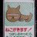
秋葉原UDXの西側向かいにボンディが出来てたけど全然並んでなくてびっくりした。お味は本店と同じです
誕生日おめでとう！！！！！
#月村手毬生誕祭2026
『Forza Horizon』シリーズ元開発者による新作オープンワールドレース『CLUTCH』発表―UE5採用・超高精度車モデル・高度なカスタマイズ・ストーリー重視
https://
gamespark.jp/article/2026/0
6/03/167300.html
…
日本時間6月6日の早朝より、本格的なトレイラーが公開予定。
@MaverickGames
トウカイのクマさんがリポスト
かわいすぎる #月村手毬生誕祭2026
Torishima / INTPさんがリポスト
ギョエ～ッ！RunwayのUnlimitedプランが急に廃止された！もはや新規申し込み不可能！すでにサブスク課金してる人は8/31までは引き続き今まで通り無制限生成できるけど、9/1からはMaxプランという無制限生成できないプランに強制移行！あと3カ月でまたもやSeedance2無制限生成難民になる運命…
CHRIS FIRST
@chrisfirst
Runway は、9月1日に Unlimited プランを終了すると発表しました。
なるせひろのりさんがリポスト
【朗報】ガチだった
ぼぎ@skeb
@ryr_214
お題箱にワニマガジン社から執筆依頼来てて一瞬びっくりしたけど明らかに詐欺だな、、、人の心を弄びやがって、、、。
いるか@心が酒びたっているんださんがリポスト
バンドリ！ともあのまとめ② | すーどり #pixiv
https://
pixiv.net/artworks/14553
2335
…
やっとまとめました。112枚！
Torishima / INTPさんがリポスト
韓国で一部の地下鉄で試してみたけど、かなり不便だった。
青
@aoisora_zzz
電車の席こっちの方がよくない？いつも目のやり場に困って辛い
いるか@心が酒びたっているんださんがリポスト
みんな黒江真由の入浴シーンが省略されたことばかり怒っているけれども、花火の場所でくみれいが会話している＝くみれいの2人きりの入浴シーンも省かれていることにも思いを馳せないといけない
コンサート指揮者「演者が体調不良になった、代わりに弾ける観客いないか！？」大学生「やります」→マジで凄いことにｗｗｗｗｗｗ #雑談・その他の話
コンサート指揮者「演者が体調不良になった、代わりに弾ける観客いないか！？」大学生「やります」→マジで凄いことにｗｗｗｗｗｗ - オレ的ゲーム速報@刃の記事ページ
jin115.com
✼••┈┈┈┈┈••✼••┈┈┈┈┈••✼
今日は #月村手毬 の誕生日
HAPPY BIRTHDAY
✼••┈┈┈┈┈••✼••┈┈┈┈┈••✼
手毬の誕生日を記念して、生誕記念配信を開催
YouTube
https://
youtu.be/QJ9Qkypdbqs
#月村手毬生誕祭2026
#学マス
7日間の鉄道の旅を繰り返すミステリーADV「クワイエット急行909号室」，発売時期が2027年に決定。新たなキービジュアルとトレイラーを公開
https://
4gamer.net/s/G094358.2606
02004
…
「ガールズメイドプディング」や「ナツノカナタ」を手掛けたKazuhide Oka氏がディレクターを務めている
ITmedia NEWSさんがリポスト
AIモデル「ミュトス」のアクセス権拡大 新たに150組織が利用へ Anthropic
AIモデル「ミュトス」のアクセス権拡大 新たに150組織が利用へ Anthropic
つば二郎@きいちゃんすこすこ侍さんがリポスト
━━━━━━
本日6/3(水)復活
サクッとケンタ！
━━━━━━
今なら300名様にデジタルKFCカードをプレゼント
①
@KFC_jp
をフォロー
②この投稿をリポスト
③結果が届く
サクサク衣と唐辛子のスパイシーな味わいの辛旨ジンガーとザックザクのカーネルクランチポテトを楽しんで！
西連寺亜希(さいれんじあき)さんがリポスト
6月2日は『日本重症筋無力症の日』ということで、1日のさいごに…
2026年『重症筋無力症の日』 | 野下真歩オフィシャルブログ「 真っすぐ、歩く。 」Powered by Ameba
https://
ameblo.jp/nositama/entry
-12968123738.html
…
#Amebaブログ #アメブロ #重症筋無力症
野下真歩：2026年『重症筋無力症の日』
Torishima / INTPさんがリポスト
なんかこのAIアニメーションめっちゃいい
リジスさんがリポスト
#COMITIA156 のお品書きです！
今回は二次創作のデザイン論について解説する「プレビュー版 本を作る勇気」と、初心者向け同人活動解説書「同人活動の手引書」を頒布します！
いずれも同人活動に悩める方や、同人誌を書いてみたいけどどうすればわからないという方向けの本です！
Torishima / INTPさんがリポスト
クラにか、こんな品位のないタイトルから子供の抑圧をほどく気合入った家族ドラマが出てくるとは思わなかったので挫折せず見てて良かった
『ファイアーエムブレム』＆『FFT』影響のSRPG『Soverain』桜庭統の楽曲が追加決定―日本語ボイスもお披露目
『ファイアーエムブレム』＆『FFT』影響のSRPG『Soverain』桜庭統の楽曲が追加決定―日本語ボイスもお披露目 | Game*Spark - 国内・海外ゲーム情報サイト
ギズモード・ジャパン（公式）さんがリポスト
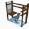
ひとまずノータイムで買うとは思います！
※6列あるなら小指でTab,Enter,BSあたりを叩きたい派
ギズモード・ジャパン（公式）
@gizmodojapan
【Keychron × GIZMART】
Keychron Orca echoを発表しました。台北で開催中のCOMPUTEXでプロトタイプが展示されます。
・完全無線左右分割キーボード
・右手に19mmトラックボール
・左手にホイール
・左右に上下スクロールパッド
・2段階テンティングスタンド内蔵
・底面マグネットで左右が合体
ポンスカ、愛してるゲーム、クラにか、レプリコが被りを起こさずにそれぞれのラブコメをしているので素晴らしい。氷さんはうーん…
アニメ『ガールズバンドクライ』公式さんがリポスト
#トゲラジ 公開収録の開催決定
2026/7/11(土)
西荻地域区民センター
14:0018:00
各部¥5,500
後日、各部のSPゲストを発表！
一次先行抽選はスペシャル会員対象
明日6/3(水)正午から！
https://
togeradi-interfm.bitfan.id
※詳細/抽選申込は6/3(水)12時にコチラに公開※
#ガルクラ
#interfm
MICHEE-N（ミッチー・Ｎ）さんがリポスト
1979（昭和54）年の6月2日、長野電鉄と上田交通を撮りに行こうと前日から夜行の客車急行「妙高」で出かけたところ、篠ノ井駅で篠ノ井線の修学旅行列車が入換中の貨車と衝突して脱線するという事故に遭遇し、足止めを喰った話は以前にも載せたことがあるが、その時の様子を撮影したフィルムがあった。
ギズモード・ジャパン（公式）さんがリポスト
Abletonやべえ
AI時代に合わせてDAWの概念がアップデートされていく
直接楽曲をAI生成するのではなく、AIで制作環境自体を作り変えながらを曲を作る方向なのね、これは面白そう
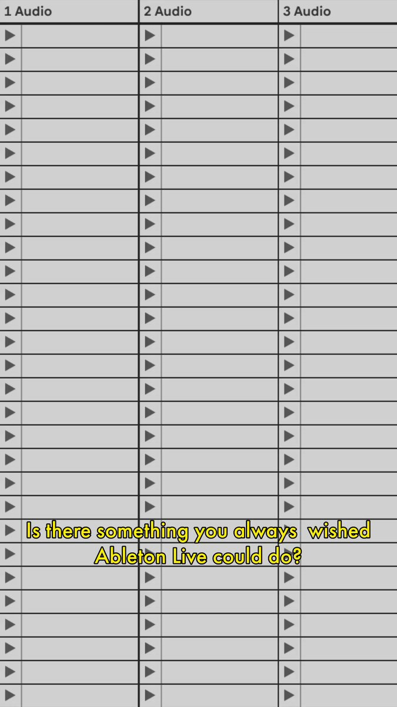
Ableton
@Ableton
無料の Extensions SDK を使って、Live を拡張、再構築、ハックしよう。Live Suite 内の実験的な遊び場 – 現在パブリックベータ版です。リンクはコメントに。
☆┈┈┈┈┈┈┈┈┈┈┈┈┈☆
#月村手毬 誕生日記念
?????????? まであと10分！
☆┈┈┈┈┈┈┈┈┈┈┈┈┈☆
公開：6/3（水）0:00（予定）
https://
youtu.be/QJ9Qkypdbqs
内容は0時をお楽しみに！
#学マス
なるせひろのりさんがリポスト
レジ袋1枚でカラスを作ってベランダ吊るしたら鳩が来なくなったやつ作ってみた羽ばたく羽根つきバージョンw
鳩が隣の建物から遠目にこれ見て本当に入ってこなかった最高
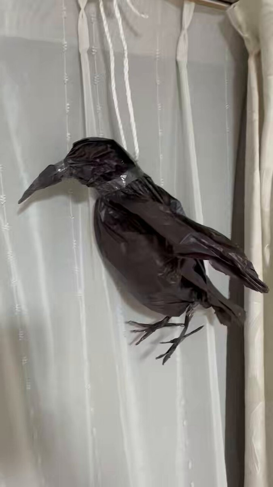
『SILENT HILL: Townfall』ではモンスターに食べられる！？米ESRBレーティングページ公開―対象年齢は17歳以上
『SILENT HILL: Townfall』ではモンスターに食べられる！？米ESRBレーティングページ公開―対象年齢は17歳以上 | Game*Spark - 国内・海外ゲーム情報サイト
輿水畏子さんがリポスト
会いたい
#まのさばネタバレ
MICHEE-N（ミッチー・Ｎ）さんがリポスト
少し前に同級生の実家から40年前の高校の修学旅行のしおりが発見されたと同級生のグループラインで盛り上がった。青函連絡船 寝台列車 新幹線ひかり 超レア昭和の乗り物だらけ！歴史にも新幹線にもランドにも興味がなかったあの頃の自分にゲンコツしたい。もう2度と乗れないんだーとくと味わえ！と
『デビル メイ クライ3』あるシーンで“ダンテが体内を駆け巡る薬剤みたい”と大注目―実際は殺る気満々のデビルハンター
https://
gamespark.jp/article/2026/0
6/02/167297.html
…
私、今日ジャムいらない
『紅の砂漠』次回6月～9月アップデート方針公開。ストーリー補強や新規バトルコンテンツ、プラットフォーム間クロスセーブ追加も
『紅の砂漠』次回6月～9月アップデート方針公開。ストーリー補強や新規バトルコンテンツ、プラットフォーム間クロスセーブ追加も | Game*Spark - 国内・海外ゲーム情報サイト
いよいよ出荷！レトロゲーム互換機「Polymega Remix」クイックスタートガイド公開。これまでのPolymegaからコレクションインポートも可能
いよいよ出荷！レトロゲーム互換機「Polymega Remix」クイックスタートガイド公開。これまでのPolymegaからコレクションインポートも可能 | Game*Spark - 国内・海外ゲ...
NYダウは一進一退で開始 AI需要の期待強く、HPEやマーベル株急騰
NYダウは一進一退で開始 AI需要の期待強く、HPEやマーベル株急騰
輿水畏子さんがリポスト
ぐしゃ ぐしゃ
#まのさばネタバレ
火曜のラブコメを走り抜けるぞ
こんなの絶対楽しい。「撃つ感触」が伝わるピストル・マウス
こんなの絶対楽しい。「撃つ感触」が伝わるピストル・マウス | ギズモード・ジャパン
貝さんさんさんがリポスト
>RP
瑠璃の宝石を表紙にして頂いている全地連発行の機関誌「地質と調査2026年度第1号（通巻167号）」ですが、業界紙のため紙の本はなかなか手に入らないようですが公式サイトにて公開されていますのでご興味ありましたらどうぞ。他の記事も興味深いですよ。
https://
zenchiren.or.jp/jgca_geo-se/
Haruhiko Okumuraさんがリポスト
JapanEEGに関する新しいデータセット/プレプリントを共有できることを大変嬉しく思います。これは、日本語発話生成の1000時間規模のマルチモーダルEEG–EMG–オーディオデータセットで構成されています。このオープンなデータセットが、非侵襲的な神経技術を用いたマルチモーダル発話デコーディングの研
We present a multimodal dataset of 1020 hours of simultaneously recorded scalp electroencephalography (EEG), facial electromyography (EMG), and speech audio from three healthy native Japanese...
arxiv.org
デリナサは一見さんには厳しいアニメでも普通に良かった
やっぱりずっとシェリーさん、ハンナさん、で呼び合ってて欲しいよね、長年連れ添った夫婦みたいな。
なるせひろのりさんがリポスト
FH6でひたすら私有地いじり倒してやっと教習所できた！！懐かしの教習コースや、ニ輪教習も併設！ぜひ遊んでください！入校生募集中
私有地名 Forza Driving School
共有コード 345171915
#FH6 #ForzaHorizon6
スイッチ2版『スターフォックス』約7分にわたる紹介映像公開。オンライン4vs4バトルや自分の顔をキャラに変身させる機能など新要素も充実
スイッチ2版『スターフォックス』約7分にわたる紹介映像公開。オンライン4vs4バトルや自分の顔をキャラに変身させる機能など新要素も充実 | Game*Spark - 国内・海外ゲーム情報サイト
ギズモード・ジャパン（公式）さんがリポスト
今更公式サイトを眺めてあー、マウス的に使うならこの角度なのねーとなっている。これなら上側のボタンにも指が届くね
コメントやいいねたくさんいただいていたのですが、お名前を間違えて記載してしまいまして再投稿させていただきました。
申し訳ございません！！
日本経済新聞 電子版（日経電子版）さんがリポスト
村田製作所、初のコンデンサー研究開発拠点 技術力磨きAI需要に対応
村田製作所、初のコンデンサー研究開発拠点 技術力磨きAI需要に対応
日本経済新聞 電子版（日経電子版）さんがリポスト
フジHD、村上氏側の議決権行使を禁止 地裁が申し立て認める
フジHD、村上氏側の議決権行使を禁止 地裁が申し立て認める
＞ω＜さんがリポスト
モデラーが「木から家ができるまで」なんて絵本描くんですから組まねばなりません。土台と基礎、からの柱がすごい分かりやすかったです。あとリアル物体なのでぐるぐる回せる。接着剤別売り。
模型のプラッツ㌠
@platz_hobby
【7月再生産】建築構造がよく分かる 1/50 建築模型 木造軸組模型 リニューアル版が再び登場。木造家屋の軸組構造をリアルに再現した、学びながら組み立てが楽しめるプラモデルキット。模型ファンはもちろん、建築を学ぶ方からも人気なアイテム
#プラッツ #プラモデル
https://
x.gd/fmR7Z
リジスさんがリポスト
四国梅雨入り
と同時に台風来てるので再掲…
四国の天気事情は大体この通りです
水不足香川県の水は高知県のダムから供給されます
うどん作りは高知の犠牲の元行われているのです
Haruhiko Okumuraさんがリポスト
論文をダウンロードするときに自動リネームするchrome pluginを作りました。和文にも対応しています。
https://
chromewebstore.google.com/detail/paper-r
enamer/fengljcmajlhcbabcmnikajfejpiicop
…
日本経済新聞 電子版（日経電子版）さんがリポスト
ポケモンの純利益が71%増の1200億円 30周年効果、26年2月期
決算:ポケモンの純利益が71%増の1200億円 30周年効果、26年2月期
Torishima / INTPさんがリポスト
Anthropic、MythosのProject Glasswingの進捗状況
"Mythosレベルのものを他の機関が作るのかいつか？"についても、ここで中々衝撃的なものが明言されており、
"6~12ヶ月以内に、他の「多くの」企業もMythosレベルのモデルを開発し、「悪用を防ぐための対策を講じることなく」公開する可能性"
とのこと
Anthropic
@AnthropicAI
Project Glasswing を拡大しています。Claude Mythos Preview へのアクセスを、15カ国以上を拠点とする約150の追加組織に拡張しました。
この拡大と Project Glasswing の今後の計画について詳しく読む:
https://
anthropic.com/news/expanding
-project-glasswing
…
とりしま (Sub I/O)さんがリポスト
欧米のゲイ連中が同じようなことを言ってる。
「日本人は公共マナーを尊重して少しの日本語を話すだけで非常に親切に接してくれる。根拠に基づいた主張なら日本人は傾聴する」「日本でゲイは抑圧されていると思っていたら社会的に自立していた」と言っていた。
木村 lotus123書院 太郎 職業は演奏家＆バスーン教師
@hpzimmerfrei
欧州に30年近く住んでるリベラルな俺にとって
日本は世界で1番自由に暮らせる国だよ。
欧州に言論の自由なんてないし
日本と同じ程度の同調圧力もキチンとあるし
市民は日本人以上に頑迷で
マスコミの言う事を
アホみたいに従順に信じる。
何か疑問を持ってて発言すると x.com/sukiyapotes/st…
Haruhiko Okumuraさんがリポスト
以前見つけた macOS のカーネルパニックなんだけど, Apple に報告したら「バグじゃないお（ ＾ω＾）」って言われたので public にしておきます
> Deterministic Kernel Panic (NULL Pointer Dereference) via Race Condition in IOTimeSyncClockManager
Deterministic Kernel Panic (NULL Pointer Dereference) via Race Condition in IOTimeSyncClockManager
Haruhiko Okumuraさんがリポスト
expl3解説書、６割程度が完成しました。
AVITAMINOSEさんがリポスト
ウェザーニュースが強い警告を出している…
神奈川県で12時間雨量が300ミリを超える恐れ、東京23区を含む関東南部の広範囲で200ミリ超の予想
神奈川県は各地で観測史上1位の大雨の恐れ
つまりあの東日本台風を超えるような記録が出てしまうかもしれないと…
日本経済新聞 電子版（日経電子版）さんがリポスト
【まるで軍艦島】
瀬戸内海に会社所有の島、日本一の鉛製錬所 レアメタルや銀も
https://
nikkei.com/article/DGXZQO
CD257I60V20C26A5000000/?n_cid=SNSTW005&n_tw=1780373873
…
「たまに工場マニアの人が来ることがありますが、入場はお断りしています」。テレビ取材は初めてという謎の小さな島「契島（ちぎりしま）」に潜入しました。

なるせひろのりさんがリポスト
宮崎県日南市、台風は通過したけど海がすごいことなってる
AVITAMINOSEさんがリポスト
東海道新幹線の停止はなく、本日のところは無事東京から三島へ帰宅…しましたら素晴らしい光景が！
大雨のたびに浸水する三島駅北口、水圧で自動閉鎖するビニール止水フロートが！地平線の果てまで！
展示会でよく見る設備、実際の設置は初めて見ました。これはすごい、便利だ、素晴らしい
ギズモード・ジャパン（公式）さんがリポスト
【和田ラヂヲ】イヤホンの泉［ジャンピン ジャック ガジェット ep.67］
【和田ラヂヲ】イヤホンの泉［ジャンピン ジャック ガジェット ep.67］ | ギズモード・ジャパン
なるせひろのりさんがリポスト
AVITAMINOSEさんがリポスト
何をどう見ても温低化がろくに進んでない暖気核構造なので普通に台風です
そして各種演算はそれを分かった上でなお発達させてきている、更には現実もおそらくその通り推移。非常に興味深い事例です
有識者求むー
日本経済新聞 電子版（日経電子版）さんがリポスト
フィジカルAI株に熱気 NVIDIA超える上昇率、国策も追い風
フィジカルAI株に熱気 NVIDIA超える上昇率、国策も追い風
ギズモード・ジャパン（公式）さんがリポスト
なんだこの現状キーボードの最高打点出しましたみたいなの
価格気になるところだけど買っちゃう気がする
ギズモード・ジャパン（公式）
@gizmodojapan
【Keychron × GIZMART】
Keychron Orca echoを発表しました。台北で開催中のCOMPUTEXでプロトタイプが展示されます。
・完全無線左右分割キーボード
・右手に19mmトラックボール
・左手にホイール
・左右に上下スクロールパッド
・2段階テンティングスタンド内蔵
・底面マグネットで左右が合体
Torishima / INTPさんがリポスト
お茶の水の交差点のところになんか白い鳥居みたいなの立ってると思ったら夏の暑さ対策のための陽よけの実証実験らしい、韓国行った時に見かけた信号待ち用の大きなパラソルすごくよかったので実験うまくいって広まってくれることを期待
ギズモード・ジャパン（公式）さんがリポスト
Gizmodoで紹介されてたトラックボール Nape Proも到着。
慣れるのに少しかかりそうだけど、トラックパッドのサブ、左手デバイス風にも使えそう。
折角なのでボールは赤色に変えといたよ
AVITAMINOSEさんがリポスト
【海面更正気圧】
種子島：最低982.1hPa
清水：現在981.7hPa
両者の中心からの距離はご覧の通り
これって
いるか@心が酒びたっているんださんがリポスト
浄化。#バンドリ #MyGO
ギズモード・ジャパン（公式）さんがリポスト
Nape Proを縦にするときは両サイドにほしいよね
Torishima / INTPさんがリポスト
6月10日(水)発売
アニメディア7月号 表紙
Torishima / INTPさんがリポスト
アニメディア7月号、メインでライブ演出を担当された中山直哉さんと対談形式で取材していただきました
自分のところは卒業ライブについてのあれやこれやを少しだけ喋っています。
よろしくお願いします〜
#超かぐや姫
アニメディア編集部
@iid_animedia
アニメディア7月号の表紙を公開！
┈┈┈┈┈┈┈
表紙＆巻頭大特集
超かぐや姫！
Wカバー＆特集
刀剣乱舞ONLINE
┈┈┈┈┈┈┈
今月は創刊45周年記念号
6月10日（水）発売です
#超かぐや姫 #CosmicPrincessKaguya
#刀剣乱舞 #とうらぶ
ねくまさんがリポスト
書いた
声優の「おもんなバラエティ」はなぜ量産されるのか？〜労働集約型ビジネスの限界とIP化の歪み〜
声優の「おもんなバラエティ」はなぜ量産されるのか？〜労働集約型ビジネスの限界とIP化の歪み〜｜スミノフ
ギズモード・ジャパン（公式）さんがリポスト
これってスワイプだけじゃなくてタップは認識すんのかな？
ギズモード・ジャパン（公式）
@gizmodojapan
きちんとお伝えできてなかったのですが、
Orca echoの左右のココはスワイプ操作できるタッチパッドになっております（※上下方向のみです）。
YouTube動画で詳しく解説しました↓↓ x.com/gizmodojapan/s…
ギズモード・ジャパン（公式）さんがリポスト
手前は普通に無理そうだったのでこの配置で試してみるかな
ギズモード・ジャパン（公式）さんがリポスト
Nape Pro
いるか@心が酒びたっているんださんがリポスト
在日10年目にしてこんなトラップに引っかかるなんて立ち直れない
Codex Python SDK、`pip install openai-codex` したら入った。
`~/Library/Python/3.14/lib/python/site-packages/codex_cli_bin/bin/codex --version` を実行したら `codex-cli 0.132.0` と出た（最新は0.136.0のはず）
Vaibhav (VB) Srivastav
@reach_vb
Codex Python SDK をちょうどリリースしました
これで、Codex を直接 Python アプリやワークフローに組み込むことができます！
> スレッドを開始
> ターンを実行
> 進捗をストリーミング
> セッションを再開
> 画像を渡す
> サンドボックスアクセスを制御
すべて、既存の Codex
なるせひろのりさんがリポスト
確認してからリリースしよう（しよう
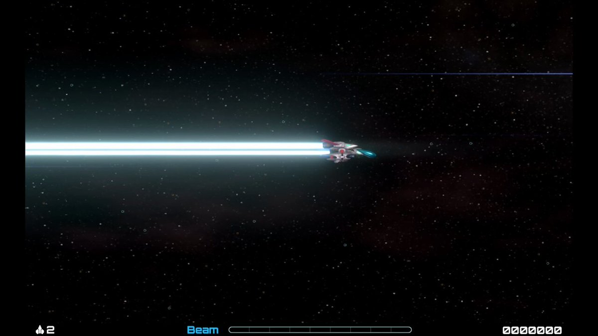
ひのき
@hinokinokoi
ゲーム中に設定一つ変えるだけでバグってしまう
テスラさんがリポスト
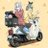
今後ビーノを納車しようとされてる人達へ…
お金に余裕があるのであれば、圧倒的に18年式以降のHONDA製造ビーノにした方がいいですよ
リンちゃんと同じのに乗りたいならYAMAHAビーノやけど、性能差があまりにも桁違いすぎます
テスラさんがリポスト
先日の練習会でのレブル走行。
前々回に縁石にぶつかりましたが、今回は飛ばずに終了
午後調子に乗ってきちゃったので、アエテ、休憩・・・冷静に
8の字もがんばりましたが残念ながら動画なくて自分の走り方がチェックできず・・・次回は頼み込もうかなと笑
ギズモード・ジャパン（公式）さんがリポスト
かっこいい…
Greenkeys
@Greenkeys_JP
【新着コンテンツ紹介】
Keychron x ギズモードジャパン新作「Orca echo」が発表されました。トラックボール・ホイール搭載の左右分割キーボードはまさに最近のトレンドを「全部盛り」しています。
とりしま (Sub I/O)さんがリポスト
一部の方以外、ローカルLLMならではの使い道の情報が無くて寂しい。小さなツール作ってるのは見かけるけど、ローカルである必然性は弱そうだし。
私は専らこの世界生成をずーっと試してる。
https://
note.com/kogu_dev/n/n95
b25be05f35
…
ǝunsʇo ıɯnɟɐsɐɯ / メタバース炎上対策専門家
@otsune
100万円以上掛けてDGX SparkとかMac Studioとか揃えてローカルLLM環境を整えても、動くモデルがクラウドLLMよりも小規模だからコスパ悪い論。全くの正論だと思うんだけど、ローカルLLMなら24時間延々と走らせて遺伝的アルゴリズムでスクリプト最適化するとか、小さなモデルで仕事をする癖が役立つとか
ポン☆潤々さんがリポスト
追加出演者1人目は【森永彩斗さん】です!
2人目は明日19時発表!
7/26(日)めんそ〜れ！仲村屋 番組イベントVol.10〜仲村宗悟生誕祭〜
ゲスト:小松昌平/西山宏太朗/熊谷健太郎/中澤まさとも/深町寿成/内田雄馬(昼)/寺島惇太さん(夜)
ボイガレ会員先行6/8(月)23:59まで
https://
ch.nicovideo.jp/voicegarage/bl
omaga/ar2232041
…
#仲村屋
うみゆき@AI研究さんがリポスト
【生成AIに著作権侵害警告 CODAが声明】
https://
0115765.com/archives/188424
国内出版社・アニメ制作会社などで構成されるCODAが、生成AI事業者に対し強い声明を発表。
許諾のない学習や、既存の日本著作物に酷似した画像・映像の生成・出力は著作権侵害に該当すると指摘しています。
出版社らの海外流通・権利団体、生成AIの著作権侵害に警告「許諾ない学習・生成・出力の現状は侵害に該当」と表明 | オタク総研
いるか@心が酒びたっているんださんがリポスト
手が小さくて、まだ何も弾けないねwww
AVITAMINOSEさんがリポスト
おい、日本人ども
韓国式うま味の「精髄」を知っているか？
くまねこ
@kuma_neko_
日本人を召喚したいのなら母国の美味しそうな料理写真を貼り「おまえら日本人の知らない料理だが」とでも言えばワラワラと寄ってきますよ。
基本的に食い意地が張っているので。 x.com/hosbbing/statu…
いるか@心が酒びたっているんださんがリポスト
になすばのお散歩漫画です
Benさんがリポスト
＼ただおじゃ／
#超特急 カイさんとリョウガさんの声優出演を
記念して2人のサイン入り台本も当たる
プレゼントキャンペーン
ぜひ感想も教えてね！
【参加方法】
①
@tadaoja_anime
をフォロー
②この投稿を6/8 23:59迄にRP
③当選者には6/29までにDMが届きます
詳細はこちら
Haruhiko Okumuraさんがリポスト
さて、画像の問題を解けますか?
清 史弘 (Fumihiro Sei)
@f_sei
「(f(x) の) 最大値・最小値を求めよ」という問題で
「最大値・最小値を与える x の値も『原則』書くように」
という指導なのだけれど、個人的には『原則』と言っているところでぎりぎりセーフなのかなと。。。(いろいろ意見があるとは思うけれど)
・なるべく書こう
・書けるときには書こう
ギズモード・ジャパン（公式）さんがリポスト
台湾のCOMPUTEXでの展示模様をお届けします！
こちらはT1 HEの試作サンプル。
Keychron初のトラックボールマウスなだけでなく、新型のMagOptスイッチが搭載されています。
なるせひろのりさんがリポスト
明日6/3(水)公開
黄チー(CV：杉田智和)
白チー(CV：杉田智和)
タチキ(CV：立木文彦)
？？？？？(CV：早見沙織)

Torishima / INTPさんがリポスト
結局どんなに敷居が下がったとしても何かを作りたいって欲求はごく一部の人しか持ち合わせてないみたい
というか普通に生きてたらなかなかクリエイティブ欲求って湧かないのかもな
何かを作りたいかつ発表したいって思ってるより特異な感情
Torishima / INTP
@izutorishima
以前も同じ話を呟いたけど、サムアルトマンは Sora2 を大衆にバラ撒いて『一般庶民が内輪/自己満向けショート動画をポン出し生成して楽しむ世界になるか』を壮大に社会実験したが、ハードルの低さにも関わらず巨額のコストを正当化できるほど人が定着せず、賭けに負けたことで証明されてしまったよな x.com/sharp__6/statu…
ポン☆潤々さんがリポスト
キリショーのおたおめツアーの待機列に並んでる猫
多分整理番号63番くらい
テスラさんがリポスト
この都市を当てられますか？
ゆうきゆうマンガ家の精神科医マンガで心療内科(50巻以上＆アニメ化)さんがリポスト
「気分」に左右されないで生きるべし、という話。
アニメ『ガールズバンドクライ』公式さんがリポスト
【アニメ『ガールズバンドクライ』】グッズ情報
Tシャツ
キャラクターラバーマット
B2タペストリー
アクリルキャラスタンド
プリズムビジュアルコレクション
ほか
予約受付開始です！（アズメーカー）
▼商品情報はこちら
https://
charaon.jp/SHOP/130420/24
7470/list.html
…
#ガルクラ
AVITAMINOSEさんがリポスト
株主だけど喜㔟社長はまだ1年しかやってないからなぁ…
鉄道ファン目線からしたら解任かなと思うけど株主目線では解任に値するかというとね…(深澤前社長(会長)の方はね…)
あと、第6号〜第8号の株主提案も中々興味深いので載せときますね
nakanonagano
@nakanonagano1
JR東日本の株主総会、ごもっともな株主提案がされてた。
いるか@心が酒びたっているんださんがリポスト
実父の通夜と嵐のラストライブを天秤にかけなきゃいけなくなった女性の話を見て、全く笑い事ではないのに「You are 埋葬！葬！」というフレーズが頭をよぎった人はわたし以外にもたくさんいるはずだ
ろじぱら ワタナベさんがリポスト
性癖がわからない相手とうちよその話をする時の私
いるか@心が酒びたっているんださんがリポスト
「政治的な発言していると、小説だせなくなりますよ」
と割とフラットな調子で言われたので、
「何も言わなければ、小説そのものがなくなりますよ」
と答えておいた。
杞憂に終わればいいんだけど。
AVITAMINOSEさんがリポスト
ローソンの盛りすぎキャンペーン始まったけど、こいつだけは過去最高に狂ってると思う（誉め言葉）
湘南ペンギンさんがリポスト
名鉄がアサド政権称賛してて鬱
とりしま (Sub I/O)さんがリポスト
ろじぱら ワタナベさんがリポスト
許す！
国旗損壊罪法案、国民民主党・玉木代表「違憲立法だ」
国旗損壊罪法案、国民民主党・玉木代表「違憲立法だ」
エンドスさんがリポスト
マリリン・モンローより4年後に生まれ、今日、引退を発表しました。
クリント・イーストウッド、俳優兼監督としての伝説。
https://
filmin.es/interprete/cli
nt-eastwood
…
エンドスさんがリポスト
クリント・イーストウッドが96歳で正式に引退しました
彼は映画の監督業から完全に手を引きました
（出典:
https://
france3-regions.franceinfo.fr/hauts-de-franc
e/somme/amiens/videos-le-fils-de-clint-eastwood-joue-les-musiques-de-ses-plus-grands-films-pour-un-cine-concert-3253621.html
…）
Wordle 1,809 4/6
いるか@心が酒びたっているんださんがリポスト
あたしのお父さんが一切女性を見下したりせず家事育児をめちゃくちゃしてる人なので、男性に見下された時にすぐ「女だから？」て思えなくて「そうやっていつも人の事バカにして生きてんのお前社会でやっていけてんの」てキレてしまう 尊重され慣れている
さたけさんがリポスト
うわキツ（様式美）…いけるやん！（本音）
いるか@心が酒びたっているんださんがリポスト
娘が体育祭から帰宅して「〇組不正したのに優勝してムカつくー！て皆で怒ってた」て言うので「〇組 優勝」で検索、学校の子達のアカウントを芋蔓で次々発掘して、ね？簡単でしょ？気をつけなね、と教えといた。
とりしま (Sub I/O)さんがリポスト
らふらふ
#超かぐや姫
トウカイのクマさんがリポスト
咲季Pでバンド組んでENDLESS DANCE演奏してきた
Haruhiko Okumuraさんがリポスト
全国の大学生よ、LaTeXの数式入力を覚えましょう。
生成AIに質問 (or 課題を丸投げ) するときに役に立ちます。
写真を撮って送るなどという、誤読が多いうえに非効率的な方法は、今すぐやめましょう
いるか@心が酒びたっているんださんがリポスト
Michael Schenker Group - Into The Arena
聴きどころは、歌がないのにメロディが強いところです。単なる速弾き曲ではなく、リフ、テーマメロディ、展開、キーボードとの掛け合いで構成されています。Michael
Haruhiko Okumuraさんがリポスト
【リリース】
本日、「3次元地図可視化サイト」を試験公開！
―国土の姿をより分かりやすく―
「3次元電子国土基本図」のデータをウェブブラウザ上でご覧いただけます。
建物、道路、鉄道を立体的な表現で見ることができます。
▼「3次元地図可視化サイト」はこちら
https://
gsi-cyberjapan.github.io/gsi-3d-2025/
Torishima / INTPさんがリポスト
お、"新聞"じゃ〜ん。
好きなんだよな、"新聞"。
貝さんさんさんがリポスト
.˚⊹⁺‧┈┈┈┈┈┈┈┈┈┈┈┈‧⁺ ⊹˚.
#アフタヌーン40周年展
描きおろし紹介
.˚⊹⁺‧┈┈┈┈┈┈┈┈┈┈┈┈‧⁺ ⊹˚.
つるまいかだ『メダリスト』
想いの詰まった特別イラストです。
このイラストを使った
＼オリジナルグッズも販売／
#マンガ繚乱
いるか@心が酒びたっているんださんがリポスト
6月7日（日）・8日（月）は、国旗損壊罪についての、こちらの講演をぜひ！
シンポジウム「国旗損壊罪を考える」
講師：志田陽子さん（憲法学者）、松尾明弘さん（弁護士／前衆院議員）
6月7日（日）15時から
武蔵野商工会館 ゼロワンホール
国旗損壊罪を考える
貝さんさんさんがリポスト
業界誌の表紙が瑠璃の宝石になるとは夢にも思わなかった！
> レジのシステムを開発しているメーカーへ聞き取りしたところ、「0％以外の税率なら、改修期間を3カ月程度に短縮できる」との説明があった。
> ある数字をゼロで割ることは不可能で、システム内で誤ってその指示が出てしまうと、深刻なエラーを引き起こす恐れがあるためだ。
よーわからん？？？
毎日新聞
@mainichi
「消費税1％」が浮上 飲食料品で“奇策”の現実味はいかに
https://
mainichi.jp/articles/20260
421/k00/00m/020/165000c
…
消費税率「1％案」は高市首相の掲げたゼロ課税の公約に反するものの、小売店のレジのシステム改修が速やかに実施でき、首相が目指す2026年度内の開始も可能との声が浮上しています。
Wordle 1,762 5/6
Torishima / INTPさんがリポスト
このタピオカ二郎ラーメンが実在しているとは、私も驚きました！
友人の何人かは、ここで食事をしたことがあります。
日本に戻ったら試してみます~
カットの二 原を担当しました。
#超かぐや姫
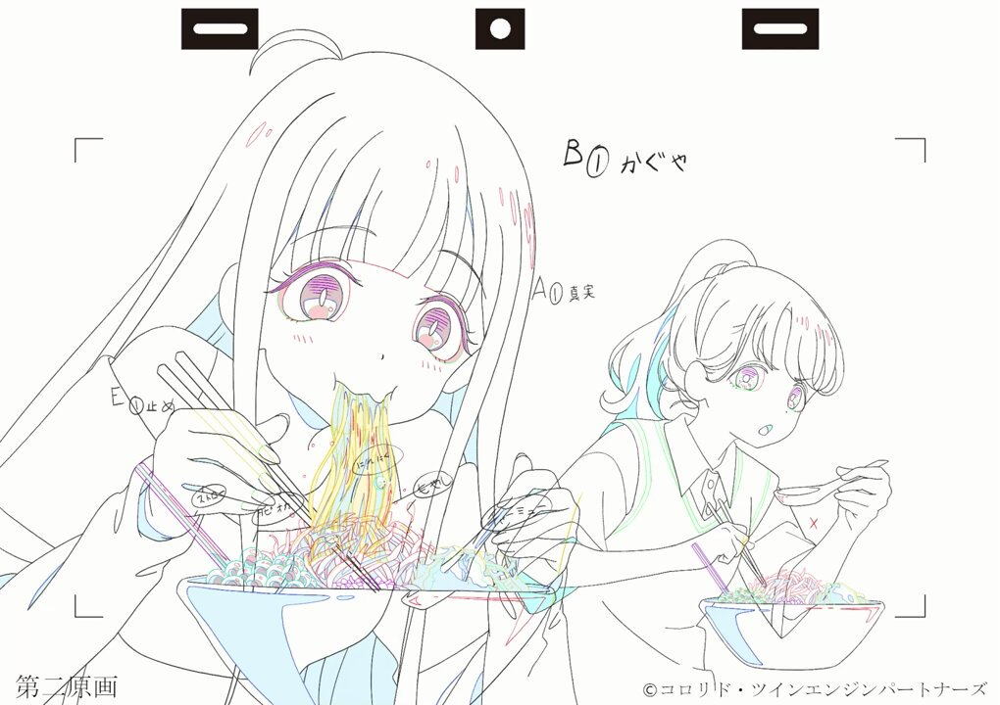
玲美
@f3C0Y3rECE66927
かぐやが食べてた二郎ラーメン存在してた！正直少し食べてみたい！
Torishima / INTPさんがリポスト
圭ちゃん枚数描かせていただきました。お疲れ様でした。

Torishima / INTPさんがリポスト
この NHK の台風フィラー BGM 、『NHKドラマ8「七瀬ふたたび」のサウンドトラック「Alone〜七瀬ふたたび〜」という曲』らしい！！！！
https://
ja.wikipedia.org/wiki/%E4%B8%83
%E7%80%AC%E3%81%B5%E3%81%9F%E3%81%9F%E3%81%B3
… を読む限り2008年のドラマのサントラをずっと使ってるっぽいな、
https://
youtube.com/watch?v=9Y_lKD
EfVHk
… の動画も2014年のだし
Torishima / INTPさんがリポスト
毎夏恒例の NHK の深夜の台風ニュースの BGM 、めっちゃ心打たれるいい曲なんだけどこのあまりに世紀末みたいな映像と一緒に見ると「こうして人類は滅亡していくんだな…」と深い絶望に襲われるので正直すき